B2_flowkit · Fable 5.2 · attempt tBLjWv4
Batch fb2 · job fb2_B_EXP22004082_26_Oct_2022_flowkit_claude-fable-5-2 · trial B_EXP22004082_26_Oct_2022_flowki__tBLjWv4. Long tool outputs are cut at 6,000 characters.
Score
0.59
0.59
Minutes
10.3
10.3
Agent cost
$3.59
$3.59
Steps
108
108
Screenshots / images
19
19
2
tool call · Bash
cd /task/inputs; cat plan.md; echo ----; cat plate_layout.csv; ls -la raw; ls /root/.claude/projects/-task/memory/ 2>/dev/null
3
tool output
# Plan: EXP22004082 | Testing Flow Cytometry based Caspase Assays (run of 2022-10-25 / 2022-10-26) Notebook text as written by the scientist, up to acquisition of this run. Sections belonging to other runs of this entry are omitted. Row and column labels in the plate tables were added for readability. ## Background Loss of function of PGRN has been shown to negatively impact neural cell health reflected by increased cell death and caspase activity. Caspases are important mediators of the cell death pathway (apoptosis). Caspases are a group of proteases that result in cleavage of protein substrates subsequently leading to cell disassembly. For the PGRN RNAswap program we will want to measure caspase activity in iPSC derived neurons before and after adding the PGRN RNAswap constructs to ensure that PGRN protein replacement is rescuing the health of neurons. Previously I have tested out some caspase activity kits but now I will be trying to detect caspase levels using flow cytometry. ## Objective Measure caspase 3 activity using flow cytometry in H4 cells to practice using this assay which will eventually be used in iPSC derived neurons. ## Materials (entry-level list) - H4 WT cells - H4 PGRN KO E1 - H4 PGRN KO E3 - H4 media - CellEvent Caspase-3/7 Green Flow Cytometry Assay Kit - Cell Signalling (Cleaved Caspase-3 (Asp175) Antibody (Alexa Fluor® 488 Conjugate) #9669) - Camptothecin (abcam) ## DAY 2022-10-25 Test out Cell Signaling Cleaved-Caspase 3 Alexa-flour 488 antibody - Split H4 cells into 24 well plate (50K cells/well) | | 1 | 2 | 3 | 4 | 5 | 6 | |---|---|---|---|---|---|---| | A | WT | WT | WT | WT | WT | WT | | B | E1 | E1 | E1 | E1 | E1 | E1 | | C | E3 | E3 | E3 | E3 | E3 | E3 | | D | | | | | | | 2. Let cells grow for o/n ## DAY 2022-10-26 Run Intracellular flow: ### Materials - 96w round bottom plate - Intracellular Fixation & Permeabilization Buffer Set (cat. no. 88-8824) - Flow Cytometry Staining Buffer (cat. no. 00-4222) - Zombie NIR Biolgend (423105) - Caspase-3 antibody (9669S) ### Procedure - Aspirate all media - PBS wash (200uL PBS) - Aspirate PBS - Add 10x Trypsin (150ul/well) - Put back in incubator (5min) - Add FBS (75ul/well) - Move all solution and cells to a round-bottom 96w plate. Check the empty plate by microscope to confirm that the majority of cells were lifted - Spin down (300g, 5min) - PBS wash (200uL PBS) - Aspirate PBS - Stain with Zombie NIR (1:200 dilution in PBS, 150ul/well) - Put back in incubator (15min) - Spin down and remove all Zombie NIR with a P200 multichannel - Fix the cells in IC Fixation Buffer (200uL/well, 30min, RT, dark). Pipet gently to resuspend cells - Spin down (400-600g, 5min, RT) (400xg this time) - Remove all solution with a P200 multichannel **Do not throw fix down the drain!! Collect and add to waste container in hood - Permeabilize the cells in 1X Permeabilization Buffer (200uL/well, 30min, RT, dark). - Spin down (400-600g, 5min, RT). - Remove all solution with a P200 multichannel **Do not throw fix down the drain!! Collect and add to waste container in hood - Resuspend cells with 100uL/well with 1X Permeabilization Buffer. - Prepare antibodies in 100 uL/well of 1x Permeabilization Buffer. Example: for a final 1:200 dilution, add 1 ul Ab to 100 ul of pearmeabilization buffer. Add to well which already has 100 ul of buffer (final dilution is 1:200). Without washing, add the antibody solution of intracellular antigen(s) to cells and incubate for at least 30 minutes at RT and protect from light. Alternatively, incubate overnight at 4C (200ul/well, dark). For Caspase antibody: 1:50 (4uL into 96uL buffer). Will also try 1:100 (2uL into 98uL buffer) - Spin down (400-600g, 5 min, RT) - Add 200 µL of 1X Permeabilization Buffer to each well and centrifuge samples at 400-600 x g (400xg this time) at room temperature for 5 minutes. Discard the supernatant. - Repeat last step - Resuspend stained cells in an appropriate volume of Flow Cytometry Staining Buffer. - Analyze by flow cytometry (ATTUNE). ### Attune Voltage Settings FSC-20; SSC-290; BL1 (caspase)-250; RL3 (Zombie NIR)-350 ### Flow plate (96-well) | | 1 | 2 | 3 | 4 | 5 | 6 | 7 | 8 | 9 | 10 | 11 | 12 | |---|---|---|---|---|---|---|---|---|---|---|---|---| | A | WT no stain | WT caspase only (1:100) | WT zombie only | WT-1 caspase @ 1:100 | WT-2 caspase @ 1:50 | WT-3 caspase @ 1:50 | E1 no stain | E1 caspase only (1:100) | E1 zombie only | E1-1 caspase @ 1:100 | E1-2 caspase @1:50 | E1-3 caspase @ 1:50 | | B | E3 no stain | E3 caspase only (1:100) | E3 zombie only | E3-1 @ 1:100 | E3-2 caspase @ 1:50 | E3-3 caspase @ 1:50 | | | | | | | ---- file,well,sample,cell_line Caspase_h4_mlk(4)_caspase_Group_A1_WT_no stain.fcs,A1,WT no stain,WT Caspase_h4_mlk(4)_caspase_Group_A2_Wt_caspase_1-100.fcs,A2,WT caspase only (1:100),WT Caspase_h4_mlk(4)_caspase_Group_A3_Wt_zombie.fcs,A3,WT zombie only,WT Caspase_h4_mlk(4)_caspase_Group_A4_Wt-1_1-100.fcs,A4,WT-1 caspase @ 1:100,WT Caspase_h4_mlk(4)_caspase_Group_A5_wt-2_1-50.fcs,A5,WT-2 caspase @ 1:50,WT Caspase_h4_mlk(4)_caspase_Group_A6_wt3_1-50.fcs,A6,WT-3 caspase @ 1:50,WT Caspase_h4_mlk(4)_caspase_Group_A7_E1_no stain.fcs,A7,E1 no stain,E1 Caspase_h4_mlk(4)_caspase_Group_A8_E1_caspase_1-100.fcs,A8,E1 caspase only (1:100),E1 Caspase_h4_mlk(4)_caspase_Group_A9_E1_zombie.fcs,A9,E1 zombie only,E1 Caspase_h4_mlk(4)_caspase_Group_A10_E1-1_1-100.fcs,A10,E1-1 caspase @ 1:100,E1 Caspase_h4_mlk(4)_caspase_Group_A11_E1-2_1-50.fcs,A11,E1-2 caspase @1:50,E1 Caspase_h4_mlk(4)_caspase_Group_A12_E1-3_1-50.fcs,A12,E1-3 caspase @ 1:50,E1 Caspase_h4_mlk(4)_caspase_Group_B1_E3_no stain.fcs,B1,E3 no stain,E3 Caspase_h4_mlk(4)_caspase_Group_B2_E3_caspase_1-100.fcs,B2,E3 caspase only (1:100),E3 Caspase_h4_mlk(4)_caspase_Group_B3_E3_zombie.fcs,B3,E3 zombie only,E3 Caspase_h4_mlk(4)_caspase_Group_B4_E3-1_1-100.fcs,B4,E3-1 @ 1:100,E3 Caspase_h4_mlk(4)_caspase_Group_B5_E3-2_1-50.fcs,B5,E3-2 caspase @ 1:50,E3 Caspase_h4_mlk(4)_caspase_Group_B6_E3-3-1- … [1,843 more characters not shown]
5
tool call · Bash
mkdir -p /task/work /task/outputs; cd /task/work; cat > inspect.py <<'EOF'
import sys, glob, os
import flowkit as fk, numpy as np, pandas as pd
d=sys.argv[1]
lay=pd.read_csv(sys.argv[2])
first=True
for f in lay.file:
s=fk.Sample(os.path.join(d,f), ignore_offset_error=True)
md=s.get_metadata()
if first:
for k,v in md.items():
if len(str(v))<300: print(k,'=',v)
else: print(k,'= <long>',str(v)[:300])
print(s.channels)
first=False
e=s.get_events(source='raw')
print(f[26:], s.event_count, md.get('tot'), md.get('btim'), md.get('etim'), md.get('vol'), [ (k,md[k]) for k in md if 'spill' in k.lower()][:1] and 'spill')
EOF
python3 -I inspect.py /task/inputs/raw /task/inputs/plate_layout.csv 2>&1 | head -1506
tool output
par = 13 tot = 6969 mode = L datatype = F byteord = 1,2,3,4 p1f = NA p1l = NA p1s = Time p1v = NA p1n = Time p1b = 32 p1r = 67108864 p1e = 0,0 p2f = NA p2l = 488 p2s = FSC-A p2v = 20 p2n = FSC-A p2b = 32 p2r = 1048576 p2e = 0,0 p3f = NA p3l = 488 p3s = SSC-A p3v = 290 p3n = SSC-A p3b = 32 p3r = 1048576 p3e = 0,0 p4f = NA p4l = 488 p4s = AAV-GFP-GFP-A p4v = 250 p4n = BL1-A p4b = 32 p4r = 1048576 p4e = 0,0 p5f = NA p5l = 640 p5s = LiveDead-Zombie NIR-A p5v = 350 p5n = RL3-A p5b = 32 p5r = 1048576 p5e = 0,0 p6f = NA p6l = 488 p6s = FSC-H p6v = 20 p6n = FSC-H p6b = 32 p6r = 1048576 p6e = 0,0 p7f = NA p7l = 488 p7s = SSC-H p7v = 290 p7n = SSC-H p7b = 32 p7r = 1048576 p7e = 0,0 p8f = NA p8l = 488 p8s = AAV-GFP-GFP-H p8v = 250 p8n = BL1-H p8b = 32 p8r = 1048576 p8e = 0,0 p9f = NA p9l = 640 p9s = LiveDead-Zombie NIR-H p9v = 350 p9n = RL3-H p9b = 32 p9r = 1048576 p9e = 0,0 p10f = NA p10l = 488 p10s = FSC-W p10v = 20 p10n = FSC-W p10b = 32 p10r = 1024 p10e = 0,0 p11f = NA p11l = 488 p11s = SSC-W p11v = 290 p11n = SSC-W p11b = 32 p11r = 1024 p11e = 0,0 p12f = NA p12l = 488 p12s = AAV-GFP-GFP-W p12v = 250 p12n = BL1-W p12b = 32 p12r = 1024 p12e = 0,0 p13f = NA p13l = 640 p13s = LiveDead-Zombie NIR-W p13v = 350 p13n = RL3-W p13b = 32 p13r = 1024 p13e = 0,0 cyt = 0A29009 Attune NxT Acoustic Focusing Cytometer (Lasers: BRV6Y) sys = SEA11065ATTUNE Microsoft Windows 10 Enterprise LTSC spillover = <long> 6,BL1-A,RL3-A,BL1-H,RL3-H,BL1-W,RL3-W,1.000000,0.000000,0.000000,0.000000,0.000000,0.000000,0.000000,1.000000,0.000000,0.000000,0.000000,0.000000,0.000000,0.000000,1.000000,0.000000,0.000000,0.000000,0.000000,0.000000,0.000000,1.000000,0.000000,0.000000,0.000000,0.000000,0.000000,0.000000,1.000000,0 btim = 11:55:08 cells = NA com = NA cytsn = 2AFC228071019 date = 26-Oct-2022 etim = 11:56:46 exp = NA fil = A1_WT_no stain.fcs inst = NA originality = Original lost = 0 op = Jeff Huang plateid = NA platename = Caspase_h4_mlk(4) proj = caspase smno = Group src = NA timestep = 0.001 vol = 164000 wellid = A1 #coincidentcount = 5 #flowrate = 100 #laser1asf = 1.06 #laser1color = Blue #laser1delay = 1100 #laser2asf = 1.11 #laser2color = Red #laser2delay = 1493 #laser3asf = 1.03 #laser3color = Violet #laser3delay = 720 #laser4asf = 1.00 #laser4color = Yellow #laser4delay = 312 #laserconfig = BRV6Y #p12label = GFP #p12target = AAV-GFP #p13label = Zombie NIR
8
tool call · Bash
cd /task/work; python3 -I inspect.py /task/inputs/raw /task/inputs/plate_layout.csv 2>&1 | tail -32
9
tool output
channel_number pnn pns png pne pnr 0 1 Time Time 1.0 (0.0, 0.0) 67108864.0 1 2 FSC-A FSC-A 1.0 (0.0, 0.0) 1048576.0 2 3 SSC-A SSC-A 1.0 (0.0, 0.0) 1048576.0 3 4 BL1-A AAV-GFP-GFP-A 1.0 (0.0, 0.0) 1048576.0 4 5 RL3-A LiveDead-Zombie NIR-A 1.0 (0.0, 0.0) 1048576.0 5 6 FSC-H FSC-H 1.0 (0.0, 0.0) 1048576.0 6 7 SSC-H SSC-H 1.0 (0.0, 0.0) 1048576.0 7 8 BL1-H AAV-GFP-GFP-H 1.0 (0.0, 0.0) 1048576.0 8 9 RL3-H LiveDead-Zombie NIR-H 1.0 (0.0, 0.0) 1048576.0 9 10 FSC-W FSC-W 1.0 (0.0, 0.0) 1024.0 10 11 SSC-W SSC-W 1.0 (0.0, 0.0) 1024.0 11 12 BL1-W AAV-GFP-GFP-W 1.0 (0.0, 0.0) 1024.0 12 13 RL3-W LiveDead-Zombie NIR-W 1.0 (0.0, 0.0) 1024.0 Group_A1_WT_no stain.fcs 6969 6969 11:55:08 11:56:46 164000 spill Group_A2_Wt_caspase_1-100.fcs 3149 3149 11:57:13 11:58:51 163000 spill Group_A3_Wt_zombie.fcs 5742 5742 11:59:19 12:00:57 162000 spill Group_A4_Wt-1_1-100.fcs 20776 20776 12:01:24 12:03:02 162000 spill Group_A5_wt-2_1-50.fcs 13119 13119 12:03:29 12:05:06 162000 spill Group_A6_wt3_1-50.fcs 21946 21946 12:05:33 12:07:11 164000 spill Group_A7_E1_no stain.fcs 33911 33911 12:07:37 12:09:16 164000 spill Group_A8_E1_caspase_1-100.fcs 52749 52749 12:09:42 12:11:21 164000 spill Group_A9_E1_zombie.fcs 49297 49297 12:11:47 12:13:25 164000 spill Group_A10_E1-1_1-100.fcs 58936 58936 12:13:52 12:15:31 164000 spill Group_A11_E1-2_1-50.fcs 51193 51193 12:15:58 12:17:36 162000 spill Group_A12_E1-3_1-50.fcs 51047 51047 12:18:02 12:19:41 164000 spill Group_B1_E3_no stain.fcs 26935 26935 12:20:08 12:21:46 162000 spill Group_B2_E3_caspase_1-100.fcs 36048 36048 12:22:12 12:23:51 164000 spill Group_B3_E3_zombie.fcs 46022 46022 12:24:17 12:25:56 164000 spill Group_B4_E3-1_1-100.fcs 27503 27503 12:26:23 12:28:01 162000 spill Group_B5_E3-2_1-50.fcs 37596 37596 12:28:27 12:30:06 164000 spill Group_B6_E3-3-1-50.fcs 24797 24797 12:30:33 12:32:11 162000 spill
11
tool call · Bash
cd /task/work; cat > explore.py <<'EOF'
import sys, os
import flowkit as fk, numpy as np, pandas as pd
d=sys.argv[1]
lay=pd.read_csv(sys.argv[2])
pd.set_option('display.width',250)
rows=[]
for f,w,smp in zip(lay.file,lay.well,lay['sample']):
s=fk.Sample(os.path.join(d,f), ignore_offset_error=True)
df=s.as_dataframe(source='raw'); df.columns=[c[0] for c in df.columns]
r=dict(well=w,sample=smp[:24],n=len(df))
for ch in ['FSC-A','SSC-A','BL1-A','RL3-A']:
q=np.percentile(df[ch],[1,50,99])
r[ch+'_p1']=round(q[0]);r[ch+'_p50']=round(q[1]);r[ch+'_p99']=round(q[2])
r['fscsat']=(df['FSC-A']>=1048000).mean().round(4)
r['sscsat']=(df['SSC-A']>=1048000).mean().round(4)
r['bl1sat']=(df['BL1-A']>=1048000).mean().round(4)
r['rl3sat']=(df['RL3-A']>=1048000).mean().round(4)
r['tmin']=df['Time'].min(); r['tmax']=df['Time'].max()
rows.append(r)
print(pd.DataFrame(rows).to_string())
EOF
python3 -I explore.py /task/inputs/raw /task/inputs/plate_layout.csv12
tool output
well sample n FSC-A_p1 FSC-A_p50 FSC-A_p99 SSC-A_p1 SSC-A_p50 SSC-A_p99 BL1-A_p1 BL1-A_p50 BL1-A_p99 RL3-A_p1 RL3-A_p50 RL3-A_p99 fscsat sscsat bl1sat rl3sat tmin tmax 0 A1 WT no stain 6969 28034 396973 732876 12066 257036 620110 -14 244 728 -60 112 379 0.0013 0.0017 0.0 0.0000 0.026 97.946 1 A2 WT caspase only (1:100) 3149 26818 381505 693032 6665 245594 696315 -42 265 1428 -57 112 599 0.0010 0.0038 0.0 0.0000 0.062 97.760 2 A3 WT zombie only 5742 27742 390715 728546 13426 259980 638668 -23 234 683 6 12097 160212 0.0016 0.0024 0.0 0.0010 0.093 97.045 3 A4 WT-1 caspase @ 1:100 20776 33326 399858 857749 18855 282267 732996 9 287 1143 62 11224 153509 0.0032 0.0022 0.0 0.0009 0.080 96.952 4 A5 WT-2 caspase @ 1:50 13119 36490 402810 813555 23030 275283 684403 22 311 1256 63 12422 86800 0.0014 0.0014 0.0 0.0013 0.015 96.818 5 A6 WT-3 caspase @ 1:50 21946 36685 393845 797320 19858 287716 688748 15 319 1262 102 13599 260695 0.0017 0.0013 0.0 0.0019 0.016 97.905 6 A7 E1 no stain 33911 37289 379360 657030 24568 282116 579508 4 260 697 -52 120 356 0.0005 0.0010 0.0 0.0000 0.018 97.900 7 A8 E1 caspase only (1:100) 52749 45179 383114 739267 32597 291225 621804 23 275 806 -53 117 344 0.0007 0.0010 0.0 0.0000 0.014 97.955 8 A9 E1 zombie only 49297 41886 375240 674847 23994 292003 601590 10 253 698 252 13270 283290 0.0007 0.0009 0.0 0.0007 0.022 97.987 9 A10 E1-1 caspase @ 1:100 58936 47109 376790 731769 27983 293050 634921 25 277 830 338 12891 306927 0.0010 0.0010 0.0 0.0011 0.014 97.915 10 A11 E1-2 caspase @1:50 51193 41042 379757 708634 23628 291058 611914 17 293 857 210 13550 320557 0.0007 0.0010 0.0 0.0014 0.014 97.164 11 A12 E1-3 caspase @ 1:50 51047 38326 373523 686221 16730 287496 594972 16 289 904 227 13367 468499 0.0006 0.0009 0.0 0.0016 0.016 98.003 12 B1 E3 no stain 26935 28638 462763 1048575 6469 385472 1048575 -27 390 2893 -50 179 975 0.0293 0.0361 0.0 0.0000 0.024 97.077 13 B2 E3 caspase only (1:100) 36048 29108 459044 1048575 6813 380176 1048575 -5 444 6374 -52 174 913 0.0293 0.0333 0.0 0.0000 0.026 98.012 14 B3 E3 zombie only 46022 30478 469917 1048575 7214 391686 1048575 -19 396 3151 160 21634 385977 0.0368 0.0399 0.0 0.0032 0.016 98.012 15 B4 E3-1 @ 1:100 27503 30450 472951 1048575 7354 381892 1048575 2 432 6096 101 26136 514976 0.0342 0.0366 0.0 0.0047 0.019 97.118 16 B5 E3-2 caspase @ 1:50 37596 33769 467930 1048575 11508 394074 1048575 12 484 5437 158 18662 376785 0.0361 0.0386 0.0 0.0037 0.457 97.993 17 B6 E3-3 caspase @ 1:50 24797 31739 459613 1048575 9905 391419 1048575 2 468 5313 71 24678 408338 0.0273 0.0331 0.0 0.0038 0.017 97.155
14
tool call · Bash
cd /task/work; cat > plots.py <<'EOF'
import sys, os
import flowkit as fk, numpy as np, pandas as pd
import matplotlib; matplotlib.use('Agg')
import matplotlib.pyplot as plt
d=sys.argv[1]
lay=pd.read_csv(sys.argv[2])
data={}
for f,w in zip(lay.file,lay.well):
s=fk.Sample(os.path.join(d,f), ignore_offset_error=True)
df=s.as_dataframe(source='raw'); df.columns=[c[0] for c in df.columns]
data[w]=df
pd.to_pickle(data,'data.pkl')
wells=list(lay.well)
def grid(fn, name, sharex=True):
fig,axs=plt.subplots(3,6,figsize=(24,12))
for ax,w in zip(axs.ravel(),wells):
fn(ax,data[w]); ax.set_title(w+' '+lay.set_index('well').loc[w,'sample'],fontsize=9)
fig.tight_layout(); fig.savefig(name,dpi=70); plt.close(fig)
grid(lambda ax,df: ax.hist2d(df['FSC-A'],df['SSC-A'],bins=150,range=[[0,1.05e6],[0,1.05e6]],norm=matplotlib.colors.LogNorm()),'fsc_ssc.png')
grid(lambda ax,df: ax.hist2d(df['FSC-A'],df['FSC-H'],bins=150,range=[[0,1.05e6],[0,1.05e6]],norm=matplotlib.colors.LogNorm()),'fsca_fsch.png')
grid(lambda ax,df: ax.hist2d(df['SSC-A'],df['SSC-H'],bins=150,range=[[0,1.05e6],[0,1.05e6]],norm=matplotlib.colors.LogNorm()),'ssca_ssch.png')
grid(lambda ax,df: ax.hist(df['Time'],bins=98,range=(0,98)),'time.png')
def a(x): return np.arcsinh(x/150)/np.log(10)
grid(lambda ax,df: ax.hist2d(a(df['RL3-A']),a(df['BL1-A']),bins=150,range=[[-0.5,4.2],[-0.5,3.5]],norm=matplotlib.colors.LogNorm()),'rl3_bl1.png')
grid(lambda ax,df: ax.hist2d(df['FSC-A'],a(df['RL3-A']),bins=150,range=[[0,1.05e6],[-0.5,4.2]],norm=matplotlib.colors.LogNorm()),'fsc_rl3.png')
grid(lambda ax,df: ax.hist2d(df['FSC-A'],a(df['BL1-A']),bins=150,range=[[0,1.05e6],[-0.5,3.5]],norm=matplotlib.colors.LogNorm()),'fsc_bl1.png')
grid(lambda ax,df: ax.hist2d(df['Time'],df['FSC-A'],bins=[98,100],range=[[0,98],[0,1.05e6]],norm=matplotlib.colors.LogNorm()),'time_fsc.png')
grid(lambda ax,df: ax.hist2d(df['Time'],a(df['BL1-A']),bins=[98,100],range=[[0,98],[-0.5,3.5]],norm=matplotlib.colors.LogNorm()),'time_bl1.png')
EOF
python3 -I plots.py /task/inputs/raw /task/inputs/plate_layout.csv15
tool output
(Bash completed with no output)
16
tool call · Read
{
"file_path": "/task/work/fsc_ssc.png"
}17
tool output
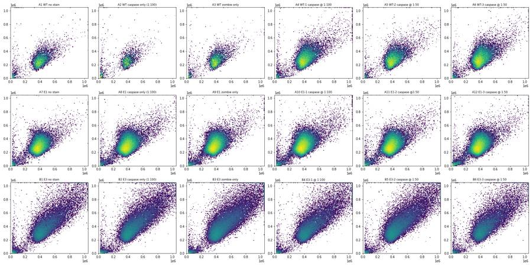
18
tool call · Read
{
"file_path": "/task/work/time.png"
}19
tool output
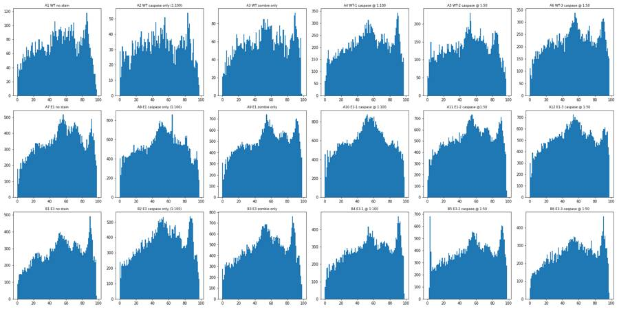
20
tool call · Read
{
"file_path": "/task/work/rl3_bl1.png"
}21
tool output
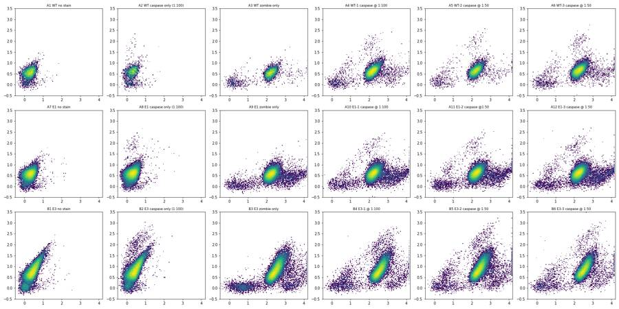
23
agent
Status: I've read the plan, loaded all 18 files, and am reviewing exploratory plots (scatter, time, Zombie vs caspase) before building the gates. Continuing with the remaining QC views.
24
tool call · Read
{
"file_path": "/task/work/fsc_bl1.png"
}25
tool output
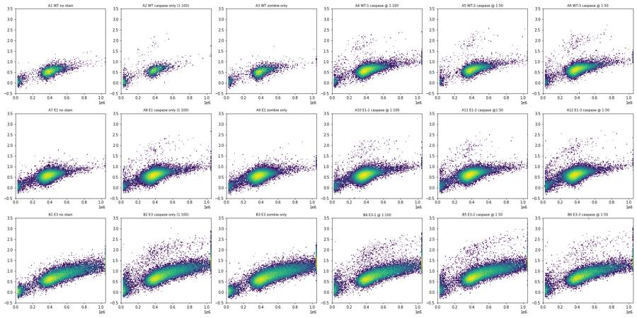
26
tool call · Read
{
"file_path": "/task/work/fsc_rl3.png"
}27
tool output
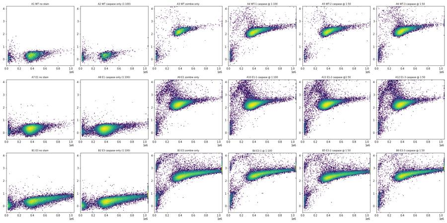
28
tool call · Read
{
"file_path": "/task/work/fsca_fsch.png"
}29
tool output
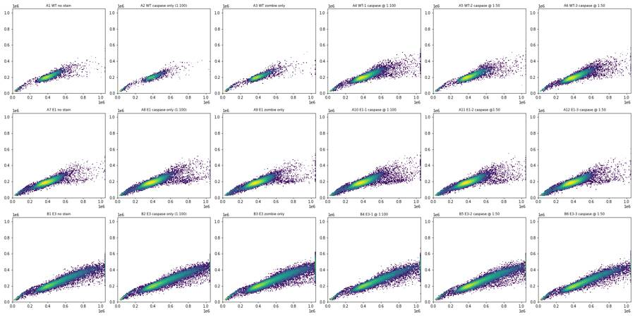
31
tool call · Read
{
"file_path": "/task/work/time_bl1.png"
}32
tool output
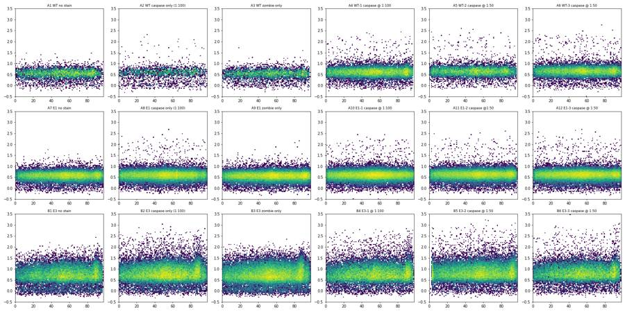
33
tool call · Bash
cd /task/work; cat > meta.py <<'EOF'
import sys, os, flowio, pandas as pd
d=sys.argv[1]; lay=pd.read_csv(sys.argv[2])
for f,w in zip(lay.file,lay.well):
t=flowio.FlowData(os.path.join(d,f), ignore_offset_error=True).text
print(w,[t.get(k) for k in ['p2v','p3v','p4v','p5v','#flowrate','vol','tot','$wellid','wellid','fil','#coincidentcount','threshold','#tr1','tr']], {k:v for k,v in t.items() if 'thresh' in k.lower() or k.lower().startswith('#tr') or 'tube' in k.lower() or 'sample' in k.lower()})
EOF
python3 -I meta.py /task/inputs/raw /task/inputs/plate_layout.csv34
tool output
A1 ['20', '290', '250', '350', '100', '164000', '6969', None, 'A1', 'A1_WT_no stain.fcs', '5', None, 'OR_FSC,25000', None] {'#tr1': 'OR_FSC,25000', '#widththreshold': '1000'}
A2 ['20', '290', '250', '350', '100', '163000', '3149', None, 'A2', 'A2_Wt_caspase_1-100.fcs', '2', None, 'OR_FSC,25000', None] {'#tr1': 'OR_FSC,25000', '#widththreshold': '1000'}
A3 ['20', '290', '250', '350', '100', '162000', '5742', None, 'A3', 'A3_Wt_zombie.fcs', '10', None, 'OR_FSC,25000', None] {'#tr1': 'OR_FSC,25000', '#widththreshold': '1000'}
A4 ['20', '290', '250', '350', '100', '162000', '20776', None, 'A4', 'A4_Wt-1_1-100.fcs', '56', None, 'OR_FSC,25000', None] {'#tr1': 'OR_FSC,25000', '#widththreshold': '1000'}
A5 ['20', '290', '250', '350', '100', '162000', '13119', None, 'A5', 'A5_wt-2_1-50.fcs', '21', None, 'OR_FSC,25000', None] {'#tr1': 'OR_FSC,25000', '#widththreshold': '1000'}
A6 ['20', '290', '250', '350', '100', '164000', '21946', None, 'A6', 'A6_wt3_1-50.fcs', '35', None, 'OR_FSC,25000', None] {'#tr1': 'OR_FSC,25000', '#widththreshold': '1000'}
A7 ['20', '290', '250', '350', '100', '164000', '33911', None, 'A7', 'A7_E1_no stain.fcs', '76', None, 'OR_FSC,25000', None] {'#tr1': 'OR_FSC,25000', '#widththreshold': '1000'}
A8 ['20', '290', '250', '350', '100', '164000', '52749', None, 'A8', 'A8_E1_caspase_1-100.fcs', '219', None, 'OR_FSC,25000', None] {'#tr1': 'OR_FSC,25000', '#widththreshold': '1000'}
A9 ['20', '290', '250', '350', '100', '164000', '49297', None, 'A9', 'A9_E1_zombie.fcs', '190', None, 'OR_FSC,25000', None] {'#tr1': 'OR_FSC,25000', '#widththreshold': '1000'}
A10 ['20', '290', '250', '350', '100', '164000', '58936', None, 'A10', 'A10_E1-1_1-100.fcs', '244', None, 'OR_FSC,25000', None] {'#tr1': 'OR_FSC,25000', '#widththreshold': '1000'}
A11 ['20', '290', '250', '350', '100', '162000', '51193', None, 'A11', 'A11_E1-2_1-50.fcs', '167', None, 'OR_FSC,25000', None] {'#tr1': 'OR_FSC,25000', '#widththreshold': '1000'}
A12 ['20', '290', '250', '350', '100', '164000', '51047', None, 'A12', 'A12_E1-3_1-50.fcs', '174', None, 'OR_FSC,25000', None] {'#tr1': 'OR_FSC,25000', '#widththreshold': '1000'}
B1 ['20', '290', '250', '350', '100', '162000', '26935', None, 'B1', 'B1_E3_no stain.fcs', '52', None, 'OR_FSC,25000', None] {'#tr1': 'OR_FSC,25000', '#widththreshold': '1000'}
B2 ['20', '290', '250', '350', '100', '164000', '36048', None, 'B2', 'B2_E3_caspase_1-100.fcs', '93', None, 'OR_FSC,25000', None] {'#tr1': 'OR_FSC,25000', '#widththreshold': '1000'}
B3 ['20', '290', '250', '350', '100', '164000', '46022', None, 'B3', 'B3_E3_zombie.fcs', '158', None, 'OR_FSC,25000', None] {'#tr1': 'OR_FSC,25000', '#widththreshold': '1000'}
B4 ['20', '290', '250', '350', '100', '162000', '27503', None, 'B4', 'B4_E3-1_1-100.fcs', '54', None, 'OR_FSC,25000', None] {'#tr1': 'OR_FSC,25000', '#widththreshold': '1000'}
B5 ['20', '290', '250', '350', '100', '164000', '37596', None, 'B5', 'B5_E3-2_1-50.fcs', '101', None, 'OR_FSC,25000', None] {'#tr1': 'OR_FSC,25000', '#widththreshold': '1000'}
B6 ['20', '290', '250', '350', '100', '162000', '24797', None, 'B6', 'B6_E3-3-1-50.fcs', '32', None, 'OR_FSC,25000', None] {'#tr1': 'OR_FSC,25000', '#widththreshold': '1000'}36
tool call · Read
{
"file_path": "/task/work/time_fsc.png"
}37
tool output
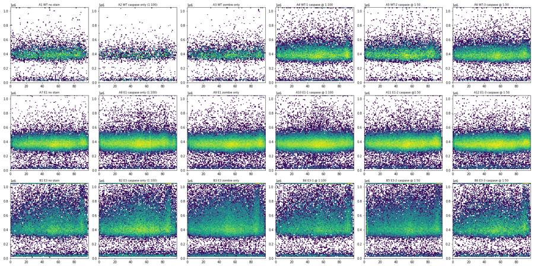
39
tool call · Bash
cd /task/work; cat > ex2.py <<'EOF'
import numpy as np, pandas as pd
import matplotlib; matplotlib.use('Agg')
import matplotlib.pyplot as plt
data=pd.read_pickle('data.pkl')
def a(x): return np.arcsinh(x/150)/np.log(10)
wells=list(data)
# 1D hist BL1 for FSC>150k, by well; overlay
fig,axs=plt.subplots(3,3,figsize=(21,14))
groups={'WT':['A1','A2','A3','A4','A5','A6'],'E1':['A7','A8','A9','A10','A11','A12'],'E3':['B1','B2','B3','B4','B5','B6']}
for i,(g,ws) in enumerate(groups.items()):
for w in ws:
df=data[w]; c=df[(df['FSC-A']>150e3)&(df['FSC-A']<1.04e6)&(df['SSC-A']<1.04e6)]
h,e=np.histogram(a(c['BL1-A']),bins=120,range=(-0.5,3.5))
axs[0,i].step(e[:-1],h/len(c),label=w); axs[0,i].set_yscale('log'); axs[0,i].set_title(g+' BL1')
h,e=np.histogram(a(c['RL3-A']),bins=150,range=(-0.5,4.3))
axs[1,i].step(e[:-1],h/len(c),label=w); axs[1,i].set_yscale('log'); axs[1,i].set_title(g+' RL3')
h,e=np.histogram(c['FSC-A'],bins=120,range=(0,1.05e6))
axs[2,i].step(e[:-1],h/len(c),label=w); axs[2,i].set_title(g+' FSC')
for r in range(3): axs[r,i].legend()
fig.tight_layout(); fig.savefig('hists.png',dpi=65)
# positive cluster scatter
fig,axs=plt.subplots(3,6,figsize=(24,12))
for ax,w in zip(axs.ravel(),wells):
df=data[w]
ax.scatter(df['FSC-A'],df['SSC-A'],s=1,c='lightgrey')
p=df[(df['BL1-A']>3000)]
ax.scatter(p['FSC-A'],p['SSC-A'],s=4,c='r'); ax.set_title(f'{w} n={len(p)}'); ax.set_xlim(0,1.05e6); ax.set_ylim(0,1.05e6)
fig.tight_layout(); fig.savefig('pos_scatter.png',dpi=65)
fig,axs=plt.subplots(3,6,figsize=(24,12))
for ax,w in zip(axs.ravel(),wells):
df=data[w]
ax.scatter(df['SSC-A'],a(df['BL1-A']),s=1,c='k',alpha=.3); ax.set_title(w); ax.set_xlim(0,1.05e6); ax.set_ylim(-0.5,3.5)
fig.tight_layout(); fig.savefig('ssc_bl1.png',dpi=65)
EOF
python3 -I ex2.py40
tool call · Read
{
"file_path": "/task/work/hists.png"
}41
tool call · Read
{
"file_path": "/task/work/pos_scatter.png"
}42
tool output
(Bash completed with no output)
43
tool output
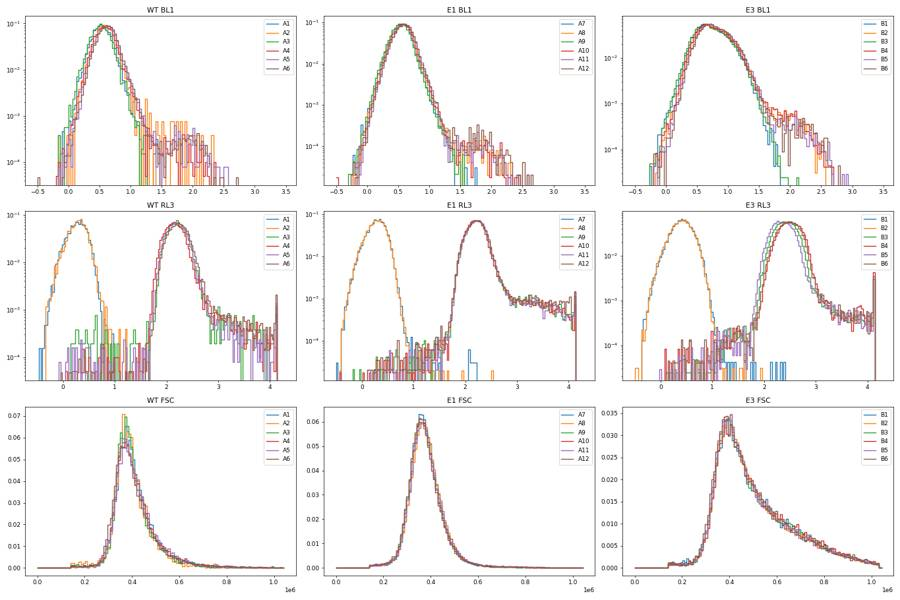
44
tool output
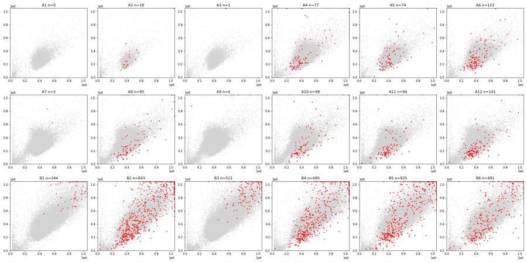
46
agent
Still exploring: a discrete cleaved-caspase-3-positive cluster exists in antibody-stained wells, but E3's large autofluorescent cells overlap it, so I'm working out a gate that separates the two.
47
tool call · Read
{
"file_path": "/task/work/ssc_bl1.png"
}48
tool output
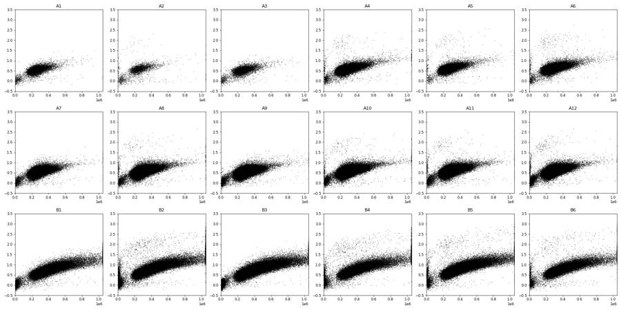
50
tool call · Bash
cd /task/work; python3 -I - <<'EOF' import flowkit as fk, inspect print(fk.__version__) print(inspect.signature(fk.transforms.LogicleTransform.__init__)) print(inspect.signature(fk.transforms.AsinhTransform.__init__)) print(inspect.signature(fk.Dimension.__init__)) print(inspect.signature(fk.gates.PolygonGate.__init__)) print(inspect.signature(fk.gates.RectangleGate.__init__)) print(inspect.signature(fk.GatingStrategy.add_gate)) print(inspect.signature(fk.GatingStrategy.add_transform)) print(inspect.signature(fk.GatingStrategy.gate_sample)) print(inspect.signature(fk.export_gatingml)) EOF
51
tool output
1.2.3 (self, param_t, param_w, param_m, param_a) (self, param_t, param_m, param_a) (self, dimension_id, compensation_ref='uncompensated', transformation_ref=None, range_min=None, range_max=None) (self, gate_name, dimensions, vertices, use_complement=False) (self, gate_name, dimensions, use_complement=False) (self, gate, gate_path, sample_id=None) (self, transform_id, transform) (self, sample, cache_events=False, verbose=False) (gating_strategy, file_handle, sample_id=None)
53
tool call · Bash
cd /task/work; cat > ex3.py <<'EOF'
import numpy as np, pandas as pd
import matplotlib; matplotlib.use('Agg')
import matplotlib.pyplot as plt
data=pd.read_pickle('data.pkl')
def a(x): return np.arcsinh(x/150)/np.log(10)
wells=list(data)
fig,axs=plt.subplots(3,6,figsize=(24,12))
fig2,axs2=plt.subplots(3,6,figsize=(24,12))
fig3,axs3=plt.subplots(3,6,figsize=(24,12))
for ax,ax2,ax3,w in zip(axs.ravel(),axs2.ravel(),axs3.ravel(),wells):
df=data[w]; c=df[(df['FSC-A']>180e3)&(df['FSC-A']<1.0e6)&(df['SSC-A']<1.0e6)&(df['SSC-A']>50e3)]
r=c['FSC-H']/c['FSC-A']
ax.hist2d(c['FSC-A'],r,bins=120,range=[[0,1.05e6],[0.1,0.8]],norm=matplotlib.colors.LogNorm()); ax.set_title(w+' H/A q1,50,99: %.3f %.3f %.3f'%tuple(np.percentile(r,[1,50,99])))
s=c[(r>0.36)]
ax2.hist2d(s['SSC-A'],a(s['RL3-A']),bins=120,range=[[0,1.05e6],[1.0,4.3]],norm=matplotlib.colors.LogNorm()); ax2.set_title(w)
ax2.grid(True)
ax3.hist2d(c['FSC-W'],c['FSC-A'],bins=120,norm=matplotlib.colors.LogNorm()); ax3.set_title(w)
fig.tight_layout(); fig.savefig('ratio.png',dpi=65)
fig2.tight_layout(); fig2.savefig('ssc_rl3.png',dpi=65)
fig3.tight_layout(); fig3.savefig('fscw.png',dpi=65)
EOF
python3 -I ex3.py54
tool call · Read
{
"file_path": "/task/work/ratio.png"
}55
tool call · Read
{
"file_path": "/task/work/ssc_rl3.png"
}56
tool output
(Bash completed with no output)
57
tool output
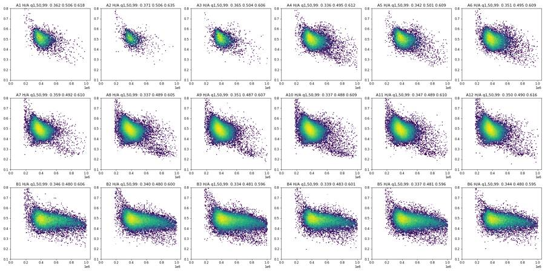
58
tool output
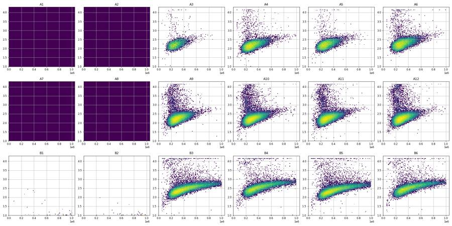
60
tool call · Bash
cd /task/work; cat > ex4.py <<'EOF'
import numpy as np, pandas as pd
data=pd.read_pickle('data.pkl')
def a(x): return np.arcsinh(x/150)/np.log(10)
bins=np.array([40,100,150,200,250,300,400,500,600,700,800,900,1000])*1e3
out={}
for w,df in data.items():
c=df[(df['FSC-A']>200e3)&(df['FSC-A']<1.0e6)&(df['SSC-A']<1.0e6)&(df['SSC-A']>40e3)]
r=c['FSC-H']/c['FSC-A']; c=c[(r>0.37)&(r<0.68)]
row=[]
for lo,hi in zip(bins[:-1],bins[1:]):
x=c.loc[(c['SSC-A']>=lo)&(c['SSC-A']<hi),'BL1-A']
if len(x)<30: row.append(' - '); continue
row.append('%4d/%5d/%5d'%(np.median(x),np.percentile(x,99),np.percentile(x,99.9)) if len(x)>=300 else '%4d/%5d/ - '%(np.median(x),np.percentile(x,99)))
print(w.ljust(4),' '.join(row))
print(bins)
EOF
python3 -I ex4.py61
tool output
A1 - 179/ 349/ - 200/ 398/ 507 225/ 461/ 638 250/ 548/ 859 309/ 634/ 826 373/ 928/ 1601 426/ 1271/ - - - - - A2 - 218/ 4441/ - 234/ 4810/10887 256/ 609/ 6012 294/ 606/ 3421 350/ 812/ 6085 414/ 1195/ - 474/ 3291/ - - - - - A3 - 186/ 320/ - 189/ 366/ 548 212/ 468/ 653 241/ 551/ 743 285/ 623/ 1187 351/ 832/ 1395 438/ 1117/ - - - - - A4 95/ 2396/ - 188/ 6178/ - 218/ 658/ 5771 235/ 624/ 7714 274/ 665/ 5731 328/ 719/ 4492 396/ 939/ 5132 484/ 1234/ 8406 677/ 5269/ - 737/ 8775/ - 949/ 2361/ - - A5 - 204/ 4183/ - 241/ 708/ 7822 268/ 701/11586 301/ 707/ 8438 358/ 851/ 8901 440/ 1769/15130 526/ 1460/ - 645/20410/ - 779/ 1602/ - - - A6 - 220/ 6367/ - 241/ 4863/ 9912 263/ 681/ 9105 297/ 646/ 7064 357/ 849/ 8415 435/ 1400/13684 524/ 3988/12337 691/ 4264/ - 791/ 4387/ - - - A7 - 171/ 355/ - 185/ 439/ 623 213/ 464/ 733 250/ 555/ 1007 301/ 690/ 1216 349/ 864/ 1463 422/ 1122/ 1686 545/ 1810/ - - - - A8 141/ 6261/ - 166/ 6081/ - 196/ 529/ 4789 219/ 514/ 3839 258/ 574/ 1450 311/ 683/ 1188 371/ 927/ 6188 450/ 1369/ 8460 577/ 4334/ - 659/ 5135/ - - - A9 93/ 276/ - 157/ 475/ - 180/ 428/ 637 202/ 466/ 677 238/ 523/ 746 287/ 643/ 1023 340/ 869/ 1511 408/ 1171/ 2865 573/ 1641/ - 685/ 1709/ - - - A10 - 173/ 4701/ - 195/ 547/ 7104 222/ 521/ 1926 258/ 590/ 2408 311/ 713/ 1307 373/ 879/ 2852 447/ 1553/ 5862 622/ 2033/ - 723/ 3088/ - - - A11 157/ 6851/ - 187/ 7280/ - 206/ 606/10163 234/ 530/ 3377 275/ 604/ 2802 332/ 733/ 1268 400/ 927/ 6015 490/ 1281/11512 655/ 4210/ - 710/ 1125/ - - - A12 147/ 4951/ - 198/ 6849/ - 203/ 2153/ 8636 234/ 553/ 5642 273/ 623/ 2724 332/ 740/ 2191 401/ 1004/ 1989 494/ 1378/24844 630/ 5326/ - 732/13897/ - - - B1 133/ 320/ - 166/ 332/ - 200/ 474/ 562 225/ 488/ 901 259/ 631/ 1088 336/ 839/ 1243 475/ 1249/ 1735 627/ 1684/ 2343 795/ 2262/ 4275 937/ 2629/ 4131 1064/ 3045/ 4103 1147/ 3771/ 5005 B2 469/ 6671/ - 526/ 7899/ - 210/ 7071/11566 241/ 4113/ 9778 289/ 1227/11546 377/ 1718/12308 536/ 1921/14858 717/ 2270/13944 892/ 2911/17135 1048/ 3645/22833 1173/ 3656/27228 1330/14230/26848 B3 - 166/ 435/ - 184/ 451/ 648 213/ 498/ 819 255/ 582/ 878 329/ 877/ 1341 473/ 1286/ 2117 635/ 1740/ 2758 788/ 2311/ 3481 956/ 2907/ 4504 1104/ 3700/ 4700 1173/ 4038/ 7002 B4 - 239/ 9634/ - 211/ 6593/ 9237 236/ 4317/11522 280/ 2134/11080 365/ 1564/ 9203 517/ 1997/13645 683/ 4067/21128 843/ 2888/16595 980/ 3527/20857 1113/ 4803/26547 1266/ 5681/ - B5 - 220/ 9876/ - 227/ 7093/10903 259/ 4725/12598 305/ 1041/12491 396/ 1084/10687 558/ 1720/16271 746/ 2019/ 9459 908/ 2783/13811 1094/ 4096/23407 1244/ 3878/27409 1386/22372/28394 B6 - 220/10208/ - 228/10937/16038 253/ 2414/11178 301/ 932/12408 391/ 1077/13650 544/ 1755/19289 726/ 2195/15304 906/ 2533/20866 1058/ 4189/25559 1212/ 3882/19955 1361/ 5343/ - [ 40000. 100000. 150000. 200000. 250000. 300000. 400000. 500000. 600000. 700000. 800000. 900000. 1000000.]
63
agent
Gate design is settled (scatter → singlets → Zombie-dim live → cleaved-caspase-3-positive above the autofluorescence band); now building it in FlowKit and checking it against the controls.
64
tool call · Bash
cd /task/work; cat > gate.py <<'EOF'
import sys, os
import numpy as np, pandas as pd
import flowkit as fk
RAW=sys.argv[1]; LAY=sys.argv[2]; OUT=sys.argv[3]
lay=pd.read_csv(LAY)
T=1048576.
logicle=fk.transforms.LogicleTransform(param_t=T, param_w=0.5, param_m=4.5, param_a=0)
def L(x): return float(logicle.apply(np.array([[float(x)]]))[0,0])
gs=fk.GatingStrategy()
gs.add_transform('logicle', logicle)
U='uncompensated'
d=lambda ch,tr=None: fk.Dimension(ch, compensation_ref=U, transformation_ref=tr)
# 1 cells: FSC-A vs SSC-A (linear). Excludes debris (FSC-A<200k), off-scale events (>=1.0e6) and low-FSC/high-SSC corner
cells=fk.gates.PolygonGate('cells',[d('FSC-A'),d('SSC-A')],
[(200e3,40e3),(200e3,500e3),(450e3,1.0e6),(1.0e6,1.0e6),(1.0e6,300e3),(600e3,40e3)])
gs.add_gate(cells,('root',))
# 2 singlets: FSC-A vs FSC-H, H/A between 0.37 and 0.68
singlets=fk.gates.PolygonGate('singlets',[d('FSC-A'),d('FSC-H')],
[(150e3,150e3*0.37),(1.05e6,1.05e6*0.37),(1.05e6,1.05e6*0.68),(150e3,150e3*0.68)])
gs.add_gate(singlets,('root','cells'))
# 3 live / dead: SSC-A (linear) vs RL3-A Zombie NIR (logicle). boundary rises with SSC
lo_x, hi_x = -10e3, 1.1e6
b0, b1 = L(40000*(125000/40000)**(lo_x/1.05e6)), L(40000*(125000/40000)**(hi_x/1.05e6))
live=fk.gates.PolygonGate('live',[d('SSC-A'),d('RL3-A','logicle')],
[(lo_x,L(-50000)),(hi_x,L(-50000)),(hi_x,b1),(lo_x,b0)])
gs.add_gate(live,('root','cells','singlets'))
dead=fk.gates.PolygonGate('dead',[d('SSC-A'),d('RL3-A','logicle')],
[(lo_x,b0),(hi_x,b1),(hi_x,1.2),(lo_x,1.2)])
gs.add_gate(dead,('root','cells','singlets'))
# 4 cleaved caspase-3 positive: SSC-A (linear) vs BL1-A AF488 (logicle); boundary log10(BL1)=3.1+1.0*SSC/1e6
c0, c1 = L(10**(3.1+1.0*lo_x/1e6)), L(10**(3.1+1.0*hi_x/1e6))
verts=[(lo_x,c0),(hi_x,c1),(hi_x,1.2),(lo_x,1.2)]
gs.add_gate(fk.gates.PolygonGate('casp3_pos',[d('SSC-A'),d('BL1-A','logicle')],verts),('root','cells','singlets','live'))
gs.add_gate(fk.gates.PolygonGate('casp3_pos_singlets',[d('SSC-A'),d('BL1-A','logicle')],verts),('root','cells','singlets'))
gs.add_gate(fk.gates.PolygonGate('casp3_pos_dead',[d('SSC-A'),d('BL1-A','logicle')],verts),('root','cells','singlets','dead'))
os.makedirs(OUT,exist_ok=True)
with open(os.path.join(OUT,'gates.xml'),'wb') as fh: fk.export_gatingml(gs,fh)
gs2=fk.parse_gating_xml(os.path.join(OUT,'gates.xml'))
print(gs2.get_gate_ids())
pops=[('cells','cells','all_events'),('singlets','singlets','cells'),('live','live','singlets'),
('casp3_pos','marker_positive','live'),('dead','other','singlets'),
('casp3_pos_singlets','other','singlets'),('casp3_pos_dead','other','dead')]
rows=[]
for f,w in zip(lay.file,lay.well):
s=fk.Sample(os.path.join(RAW,f), ignore_offset_error=True)
res=gs2.gate_sample(s) # counts from the re-loaded (saved) strategy
rep=res.report.set_index('gate_name')
n={'all_events':s.event_count}
rows.append(dict(file=f,well=w,population='all_events',role='other',parent='none',count=s.event_count,pct_of_parent=''))
for p,role,par in pops:
cnt=int(rep.loc[p,'count']); n[p]=cnt
assert int(res.get_gate_membership(p).sum())==cnt
rows.append(dict(file=f,well=w,population=p,role=role,parent=par,count=cnt,
pct_of_parent=('' if n[par]==0 else repr(round(100*cnt/n[par],4)))))
df=pd.DataFrame(rows,columns=['file','well','population','role','parent','count','pct_of_parent'])
df.to_csv(os.path.join(OUT,'counts.csv'),index=False)
pv=df.pivot(index='well',columns='population',values='count').loc[lay.well]
pv['%cells']=100*pv.cells/pv.all_events; pv['%singl']=100*pv.singlets/pv.cells; pv['%live']=100*pv.live/pv.singlets
pv['%casp_live']=100*pv.casp3_pos/pv.live; pv['%casp_singl']=100*pv.casp3_pos_singlets/pv.singlets; pv['%casp_dead']=100*pv.casp3_pos_dead/pv.dead.replace(0,np.nan)
pd.set_option('display.width',250)
print(pv[['all_events','cells','singlets','live','dead','casp3_pos','casp3_pos_singlets','casp3_pos_dead','%cells','%singl','%live','%casp_live','%casp_singl','%casp_dead']].round(3).to_string())
EOF
python3 -I gate.py /task/inputs/raw /task/inputs/plate_layout.csv /task/outputs65
tool output
[('cells', ('root',)), ('singlets', ('root', 'cells')), ('live', ('root', 'cells', 'singlets')), ('casp3_pos', ('root', 'cells', 'singlets', 'live')), ('dead', ('root', 'cells', 'singlets')), ('casp3_pos_dead', ('root', 'cells', 'singlets', 'dead')), ('casp3_pos_singlets', ('root', 'cells', 'singlets'))]
population all_events cells singlets live dead casp3_pos casp3_pos_singlets casp3_pos_dead %cells %singl %live %casp_live %casp_singl %casp_dead
well
A1 6969 6371 6275 6275 0 0 0 0 91.419 98.493 100.000 0.000 0.000 NaN
A2 3149 2542 2505 2505 0 19 19 0 80.724 98.544 100.000 0.758 0.758 NaN
A3 5742 5162 5102 5034 68 0 0 0 89.899 98.838 98.667 0.000 0.000 0.000
A4 20776 19706 19297 19022 275 77 77 0 94.850 97.924 98.575 0.405 0.399 0.000
A5 13119 12590 12369 12242 127 68 68 0 95.968 98.245 98.973 0.555 0.550 0.000
A6 21946 21025 20664 20269 395 113 114 1 95.803 98.283 98.088 0.558 0.552 0.253
A7 33911 32495 32021 32021 0 0 0 0 95.824 98.541 100.000 0.000 0.000 NaN
A8 52749 50989 49984 49984 0 76 76 0 96.663 98.029 100.000 0.152 0.152 NaN
A9 49297 47390 46541 45440 1101 0 0 0 96.132 98.208 97.634 0.000 0.000 0.000
A10 58936 56798 55637 54350 1287 90 91 1 96.372 97.956 97.687 0.166 0.164 0.078
A11 51193 49019 48104 47014 1090 86 87 1 95.753 98.133 97.734 0.183 0.181 0.092
A12 51047 48433 47581 46230 1351 133 134 1 94.879 98.241 97.161 0.288 0.282 0.074
B1 26935 23200 22647 22647 0 0 0 0 86.133 97.616 100.000 0.000 0.000 NaN
B2 36048 31461 30725 30725 0 320 320 0 87.275 97.661 100.000 1.041 1.041 NaN
B3 46022 40253 39216 38408 808 2 2 0 87.465 97.424 97.940 0.005 0.005 0.000
B4 27503 23987 23408 22840 568 252 264 12 87.216 97.586 97.573 1.103 1.128 2.113
B5 37596 33586 32763 32026 737 234 237 3 89.334 97.550 97.751 0.731 0.723 0.407
B6 24797 22031 21535 21000 535 168 171 3 88.845 97.749 97.516 0.800 0.794 0.56167
tool call · Bash
cd /task/work; cat > viewgates.py <<'EOF'
import sys, os
import numpy as np, pandas as pd, flowkit as fk
import matplotlib; matplotlib.use('Agg')
import matplotlib.pyplot as plt
from matplotlib.colors import LogNorm
RAW=sys.argv[1]; LAY=sys.argv[2]; OUT=sys.argv[3]
lay=pd.read_csv(LAY)
gs=fk.parse_gating_xml(os.path.join(OUT,'gates.xml'))
lg=gs.get_transform('logicle')
def L(x): return lg.apply(np.asarray(x,float).reshape(-1,1)).ravel()
def poly(name,path):
g=gs.get_gate(name,path)
v=np.array([vv for vv in g.vertices]); return np.vstack([v,v[:1]])
P={'cells':poly('cells',('root',)),'singlets':poly('singlets',('root','cells')),'live':poly('live',('root','cells','singlets')),
'casp':poly('casp3_pos',('root','cells','singlets','live'))}
figs={k:plt.subplots(3,6,figsize=(24,12)) for k in P}
ticks=[-100,0,100,1000,10000,100000,1000000]
for i,(f,w,smp) in enumerate(zip(lay.file,lay.well,lay['sample'])):
s=fk.Sample(os.path.join(RAW,f), ignore_offset_error=True)
res=gs.gate_sample(s)
df=s.as_dataframe(source='raw'); df.columns=[c[0] for c in df.columns]
m={p:res.get_gate_membership(p) for p in ['cells','singlets','live','casp3_pos']}
ax=figs['cells'][1].ravel()[i]; ax.hist2d(df['FSC-A'],df['SSC-A'],bins=150,range=[[0,1.05e6],[0,1.05e6]],norm=LogNorm()); ax.plot(*P['cells'].T,'r'); ax.set_title(f'{w} {smp}',fontsize=9)
c=df[m['cells']]
ax=figs['singlets'][1].ravel()[i]; ax.hist2d(c['FSC-A'],c['FSC-H'],bins=150,range=[[0,1.05e6],[0,0.75e6]],norm=LogNorm()); ax.plot(*P['singlets'].T,'r'); ax.set_title(f'{w} {smp}',fontsize=9)
c=df[m['singlets']]
ax=figs['live'][1].ravel()[i]; ax.hist2d(c['SSC-A'],L(c['RL3-A']),bins=150,range=[[0,1.05e6],[0,1.02]],norm=LogNorm()); ax.plot(*P['live'].T,'r'); ax.set_title(f'{w} {smp}',fontsize=9); ax.set_yticks(L(ticks)); ax.set_yticklabels(ticks); ax.set_ylim(0.05,1.02)
c=df[m['live']]
ax=figs['casp'][1].ravel()[i]; ax.hist2d(c['SSC-A'],L(c['BL1-A']),bins=150,range=[[0,1.05e6],[0,1.02]],norm=LogNorm()); ax.plot(*P['casp'].T,'r'); ax.set_title(f'{w} {smp} n+={m["casp3_pos"].sum()}',fontsize=9); ax.set_yticks(L(ticks)); ax.set_yticklabels(ticks); ax.set_ylim(0.05,0.9)
for k,(fig,_) in figs.items():
fig.tight_layout(); fig.savefig(f'gate_{k}.png',dpi=65)
EOF
python3 -I viewgates.py /task/inputs/raw /task/inputs/plate_layout.csv /task/outputs68
tool call · Read
{
"file_path": "/task/work/gate_casp.png"
}69
tool call · Read
{
"file_path": "/task/work/gate_live.png"
}70
tool output
(Bash completed with no output)
71
tool output
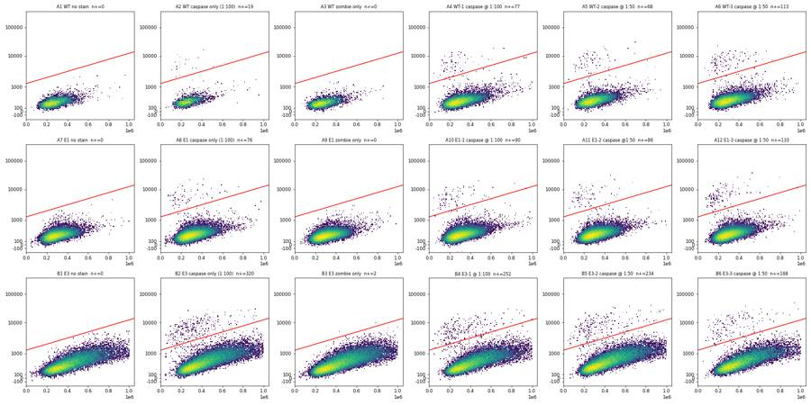
72
tool output
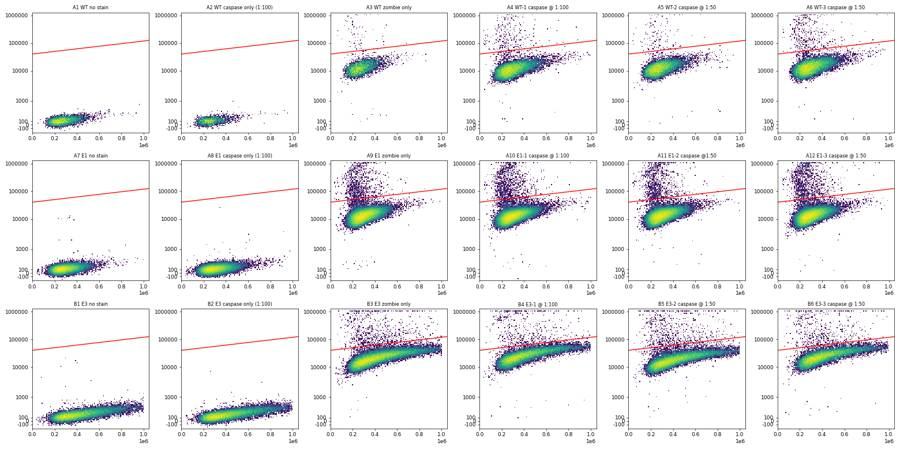
74
agent
Gates are built and saved; controls are clean (0–2 positive events in unstained and Zombie-only wells). Now checking the scatter/singlet overlays, then QC numbers and the titration comparison.
75
tool call · Read
{
"file_path": "/task/work/gate_cells.png"
}76
tool output
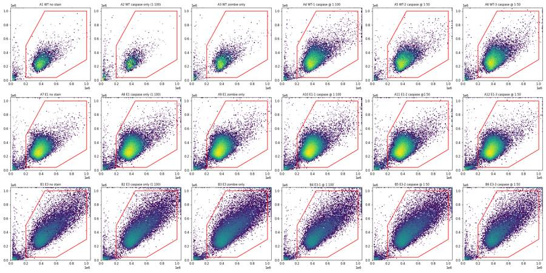
77
tool call · Read
{
"file_path": "/task/work/gate_singlets.png"
}78
tool output
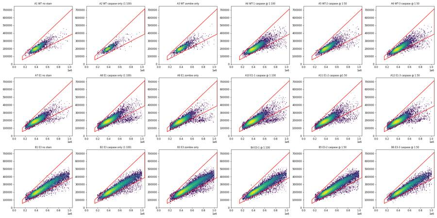
80
tool call · Bash
cd /task/work; sed -i 's/\[(150e3,150e3\*0.37),(1.05e6,1.05e6\*0.37),(1.05e6,1.05e6\*0.68),(150e3,150e3\*0.68)\]/[(150e3,58e3),(1.05e6,365e3),(1.05e6,715e3),(150e3,105e3)]/; s/# 2 singlets: FSC-A vs FSC-H, H\/A between 0.37 and 0.68/# 2 singlets: FSC-A vs FSC-H diagonal band (H\/A ~0.35-0.39 lower edge, ~0.68-0.70 upper edge)/' gate.py; grep -n "singlets=" -A2 gate.py | head; python3 -I gate.py /task/inputs/raw /task/inputs/plate_layout.csv /task/outputs
cat > qc.py <<'EOF'
import numpy as np, pandas as pd
data=pd.read_pickle('data.pkl')
rows=[]
for w,df in data.items():
t=df['Time'].values
h,_=np.histogram(t,bins=np.arange(0,99,1.0))
hh=h[1:96]
gaps=np.diff(np.sort(t))
r=dict(well=w,n=len(df),dur=round(t.max()-t.min(),1),rate_med=np.median(hh),rate_min=hh.min(),rate_max=h.max(),argmax=int(h.argmax()),maxgap=round(gaps.max(),2),
fsc_rail=(df['FSC-A']>=1048575).sum(),ssc_rail=(df['SSC-A']>=1048575).sum(),bl1_rail=(df['BL1-A']>=1048575).sum(),rl3_rail=(df['RL3-A']>=1048575).sum(),
scat_rail_pct=round(100*((df['FSC-A']>=1048575)|(df['SSC-A']>=1048575)).mean(),2),
debris_pct=round(100*(df['FSC-A']<200e3).mean(),1))
# first vs second half medians
for ch in ['FSC-A','BL1-A','RL3-A']:
a=df.loc[t<49,ch].median(); b=df.loc[t>=49,ch].median(); r[ch+'_h2/h1']=round(b/a,2)
rows.append(r)
pd.set_option('display.width',250)
print(pd.DataFrame(rows).to_string())
df=data['B5']; b=df[(df.Time>1.5)&(df.Time<4)]; print(len(b), b[['FSC-A','SSC-A','BL1-A','RL3-A']].median().round(0).to_dict(), df[['FSC-A','SSC-A','BL1-A','RL3-A']].median().round(0).to_dict())
print(np.histogram(df.Time,bins=np.arange(0,8,0.5))[0])
EOF
python3 -I qc.py81
tool output
21:singlets=fk.gates.PolygonGate('singlets',[d('FSC-A'),d('FSC-H')],
22- [(150e3,58e3),(1.05e6,365e3),(1.05e6,715e3),(150e3,105e3)])
23-gs.add_gate(singlets,('root','cells'))
[('cells', ('root',)), ('singlets', ('root', 'cells')), ('live', ('root', 'cells', 'singlets')), ('casp3_pos', ('root', 'cells', 'singlets', 'live')), ('dead', ('root', 'cells', 'singlets')), ('casp3_pos_dead', ('root', 'cells', 'singlets', 'dead')), ('casp3_pos_singlets', ('root', 'cells', 'singlets'))]
population all_events cells singlets live dead casp3_pos casp3_pos_singlets casp3_pos_dead %cells %singl %live %casp_live %casp_singl %casp_dead
well
A1 6969 6371 6305 6305 0 0 0 0 91.419 98.964 100.000 0.000 0.000 NaN
A2 3149 2542 2520 2520 0 19 19 0 80.724 99.135 100.000 0.754 0.754 NaN
A3 5742 5162 5123 5055 68 0 0 0 89.899 99.244 98.673 0.000 0.000 0.000
A4 20776 19706 19420 19140 280 78 78 0 94.850 98.549 98.558 0.408 0.402 0.000
A5 13119 12590 12429 12301 128 69 69 0 95.968 98.721 98.970 0.561 0.555 0.000
A6 21946 21025 20783 20382 401 115 116 1 95.803 98.849 98.071 0.564 0.558 0.249
A7 33911 32495 32153 32153 0 0 0 0 95.824 98.948 100.000 0.000 0.000 NaN
A8 52749 50989 50198 50198 0 76 76 0 96.663 98.449 100.000 0.151 0.151 NaN
A9 49297 47390 46770 45655 1115 0 0 0 96.132 98.692 97.616 0.000 0.000 0.000
A10 58936 56798 55951 54636 1315 92 93 1 96.372 98.509 97.650 0.168 0.166 0.076
A11 51193 49019 48345 47242 1103 86 88 2 95.753 98.625 97.718 0.182 0.182 0.181
A12 51047 48433 47792 46423 1369 135 136 1 94.879 98.677 97.136 0.291 0.285 0.073
B1 26935 23200 22839 22839 0 0 0 0 86.133 98.444 100.000 0.000 0.000 NaN
B2 36048 31461 30953 30953 0 332 332 0 87.275 98.385 100.000 1.073 1.073 NaN
B3 46022 40253 39551 38719 832 2 2 0 87.465 98.256 97.896 0.005 0.005 0.000
B4 27503 23987 23613 23027 586 265 277 12 87.216 98.441 97.518 1.151 1.173 2.048
B5 37596 33586 33045 32280 765 248 251 3 89.334 98.389 97.685 0.768 0.760 0.392
B6 24797 22031 21726 21168 558 177 180 3 88.845 98.616 97.432 0.836 0.829 0.538
well n dur rate_med rate_min rate_max argmax maxgap fsc_rail ssc_rail bl1_rail rl3_rail scat_rail_pct debris_pct FSC-A_h2/h1 BL1-A_h2/h1 RL3-A_h2/h1
0 A1 6969 97.9 73.0 27 118 85 0.26 9 12 0 0 0.29 8.3 1.01 1.02 1.05
1 A2 3149 97.7 32.0 12 54 83 0.39 3 12 0 0 0.38 19.0 1.01 1.05 1.08
2 A3 5742 97.0 59.0 23 92 89 0.27 9 14 0 6 0.33 9.8 1.01 1.03 1.04
3 A4 20776 96.9 218.0 83 343 89 0.06 67 46 0 19 0.46 4.6 1.01 1.02 1.01
4 A5 13119 96.8 138.0 49 231 52 0.09 18 18 0 17 0.24 3.7 1.00 1.01 0.99
5 A6 21946 97.9 223.0 69 338 55 0.06 38 28 0 41 0.26 3.9 1.00 1.01 1.03
6 A7 33911 97.9 339.0 83 518 56 0.07 17 33 0 0 0.12 4.0 1.00 1.01 1.04
7 A8 52749 97.9 539.0 230 861 64 0.04 35 52 0 0 0.14 3.1 1.00 1.01 1.03
8 A9 49297 98.0 510.0 158 740 54 0.03 36 43 0 35 0.13 3.7 1.01 1.02 1.01
9 A10 58936 97.9 577.0 215 876 52 0.03 59 56 0 62 0.16 3.4 1.01 1.01 1.02
10 A11 51193 97.2 533.0 192 736 54 0.04 38 50 0 74 0.15 4.1 1.01 1.01 1.01
11 A12 51047 98.0 531.0 175 726 53 0.04 30 47 0 83 0.13 5.0 1.01 1.01 1.02
12 B1 26935 97.1 28
… [1,222 more characters not shown]83
tool call · Skill
{
"skill": "dataviz"
}84
tool output
Launching skill: dataviz
85
tool call · Bash
cd /task/work; cat > stats.py <<'EOF'
import sys, os
import numpy as np, pandas as pd, flowkit as fk
from scipy import stats
RAW=sys.argv[1]; LAY=sys.argv[2]; OUT=sys.argv[3]
lay=pd.read_csv(LAY)
gs=fk.parse_gating_xml(os.path.join(OUT,'gates.xml'))
rows=[]; ev={}
for f,w,smp in zip(lay.file,lay.well,lay['sample']):
s=fk.Sample(os.path.join(RAW,f), ignore_offset_error=True)
res=gs.gate_sample(s)
df=s.as_dataframe(source='raw'); df.columns=[c[0] for c in df.columns]
for p in ['cells','singlets','live','dead','casp3_pos','casp3_pos_singlets']: df[p]=res.get_gate_membership(p)
ev[w]=df
live=df[df.live]; pos=df[df.casp3_pos]; neg=live[~live.casp3_pos]
thr=10**(3.1+live['SSC-A']/1e6)
r=dict(well=w,sample=smp,live=len(live),pos=len(pos),pct=100*len(pos)/len(live),
neg_med=neg['BL1-A'].median(), neg_rsd=(np.percentile(neg['BL1-A'],84.13)-np.percentile(neg['BL1-A'],15.87))/2,
pos_med=pos['BL1-A'].median() if len(pos) else np.nan,
pos_ssc=pos['SSC-A'].median() if len(pos) else np.nan, neg_ssc=neg['SSC-A'].median(),
pos_fsc=pos['FSC-A'].median() if len(pos) else np.nan, neg_fsc=neg['FSC-A'].median(),
pos_rl3=pos['RL3-A'].median() if len(pos) else np.nan, neg_rl3=neg['RL3-A'].median())
r['SI']=(r['pos_med']-r['neg_med'])/(2*r['neg_rsd'])
for sh in [-0.2,-0.1,0.1,0.2,0.3]:
r[f'pct_{sh:+.1f}']=100*(live['BL1-A']>thr*10**sh).mean()
r['pct_flat3000']=100*(live['BL1-A']>3000).mean()
# restricting to main-size cells (SSC<400k)
sm=live[live['SSC-A']<400e3]; r['pct_ssc<400k']=100*sm.casp3_pos.mean(); r['n_ssc<400k']=len(sm)
rows.append(r)
pd.to_pickle(ev,'events.pkl')
t=pd.DataFrame(rows).set_index('well'); pd.set_option('display.width',280); print(t.round(3).to_string())
t.to_pickle('stats.pkl')
g={'WT':['A4','A5','A6'],'E1':['A10','A11','A12'],'E3':['B4','B5','B6']}
for k,ws in g.items(): print(k, t.loc[ws,'pct'].mean().round(4), t.loc[ws,'pct'].std(ddof=1).round(4), 'pooled', 100*t.loc[ws,'pos'].sum()/t.loc[ws,'live'].sum())
for a,b in [('WT','E1'),('WT','E3'),('E1','E3')]:
print(a,b,stats.ttest_ind(t.loc[g[a],'pct'],t.loc[g[b],'pct'],equal_var=False))
x=[[t.loc[g[a],'pos'].sum(), t.loc[g[a],'live'].sum()-t.loc[g[a],'pos'].sum()],[t.loc[g[b],'pos'].sum(), t.loc[g[b],'live'].sum()-t.loc[g[b],'pos'].sum()]]
print(' chi2 p',stats.chi2_contingency(x)[1])
EOF
python3 -I stats.py /task/inputs/raw /task/inputs/plate_layout.csv /task/outputs86
tool output
sample live pos pct neg_med neg_rsd pos_med pos_ssc neg_ssc pos_fsc neg_fsc pos_rl3 neg_rl3 SI pct_-0.2 pct_-0.1 pct_+0.1 pct_+0.2 pct_+0.3 pct_flat3000 pct_ssc<400k n_ssc<400k well A1 WT no stain 6305 0 0.000 254.0 102.500 NaN NaN 263569.0 NaN 402890.0 NaN 115.0 NaN 0.000 0.000 0.000 0.000 0.000 0.000 0.000 5708 A2 WT caspase only (1:100) 2520 19 0.754 289.0 105.625 5221.0 195323.0 262091.0 388634.0 398048.0 112.0 119.0 23.347 0.794 0.754 0.635 0.556 0.516 0.675 0.739 2300 A3 WT zombie only 5055 0 0.000 245.0 96.965 NaN NaN 268100.0 NaN 398108.0 NaN 12528.0 NaN 0.000 0.000 0.000 0.000 0.000 0.000 0.000 4570 A4 WT-1 caspase @ 1:100 19140 78 0.408 290.0 113.500 5687.0 222072.5 285483.5 356822.0 403469.5 8893.0 11213.5 23.775 0.470 0.455 0.366 0.319 0.246 0.366 0.425 16224 A5 WT-2 caspase @ 1:50 12301 69 0.561 313.0 119.500 6742.0 243080.0 277638.0 399045.0 405761.5 10375.0 12501.0 26.900 0.626 0.602 0.504 0.480 0.439 0.553 0.523 10709 A6 WT-3 caspase @ 1:50 20382 115 0.564 321.0 120.000 7050.0 246761.0 290966.0 391191.0 397082.0 13215.0 13554.0 28.038 0.633 0.603 0.550 0.496 0.422 0.550 0.537 17133 A7 E1 no stain 32153 0 0.000 264.0 98.500 NaN NaN 284656.0 NaN 382116.0 NaN 121.0 NaN 0.006 0.000 0.000 0.000 0.000 0.006 0.000 28706 A8 E1 caspase only (1:100) 50198 76 0.151 277.0 104.500 5479.0 214284.0 292556.0 401756.0 384935.5 138.0 117.0 24.890 0.173 0.161 0.145 0.127 0.100 0.141 0.141 43884 A9 E1 zombie only 45655 0 0.000 257.0 97.000 NaN NaN 295326.0 NaN 378700.0 NaN 13072.0 NaN 0.004 0.000 0.000 0.000 0.000 0.000 0.000 39609 A10 E1-1 caspase @ 1:100 54636 92 0.168 280.0 104.000 5323.0 213723.5 295972.0 385069.0 379761.5 10356.0 12683.0 24.245 0.192 0.183 0.152 0.128 0.108 0.143 0.165 47178 A11 E1-2 caspase @1:50 47242 86 0.182 297.0 110.000 6185.0 201958.0 294715.0 372628.5 383626.5 10853.5 13389.0 26.764 0.201 0.193 0.171 0.161 0.140 0.165 0.179 40856 A12 E1-3 caspase @ 1:50 46423 135 0.291 294.0 111.000 5489.0 192611.0 292566.5 359265.0 378347.0 9862.0 13127.5 23.401 0.319 0.302 0.269 0.256 0.213 0.252 0.306 40586 B1 E3 no stain 22839 0 0.000 400.0 282.000 NaN NaN 390942.0 NaN 469637.0 NaN 181.0 NaN 0.044 0.009 0.000 0.000 0.000 0.114 0.000 11947 B2 E3 caspase only (1:100) 30953 332 1.073 444.0 312.500 6733.5 315502.0 384594.0 445016.0 464268.0 171.0 176.0 10.063 1.257 1.131 0.956 0.811 0.682 1.166 1.357 16650 B3 E3 zombie only 38719 2 0.005 394.0 287.000 7721.5 608370.0 390137.0 751470.5 471105.0 25863.5 20708.0 12.766 0.057 0.015 0.005 0.000 0.000 0.163 0.000 20192 B4 E3-1 @ 1:100 23027 265 1.151 426.0 295.500 5876.0 284093.0 383427.0 458484.0 476708.0 21664.0 25328.0 9.222 1.411 1.281 1.008 0.851 0.634 1.216 1.475 12404 B5 E3-2 caspase @ 1:50 32280 248 0.768 469.0 320.000 7827.0 283426.5 389738.5 447862.5 466198.0 15711.5 17793.5 11.497 0.895 0.818 0.682 0.620 0.536 0.846 0.985 16958 B6 E3-3 caspase @ 1:50 21168 177 0.836 465.0 311.000 8365.0 312059.0 392742.0 468301.0 463626.0 21050.0 24019.0 12.701 0.945 0.874 0.746 0.680 0.572 0.931 1.018 10997 WT 0.5109 0.0895 pooled 0.5055670262238774 E1 0.2137 0.0671 pooled 0.21105724169088544 E3 0.9184 0.2041 pooled 0.9022556390977443 WT E1 TtestResult(statistic=4.600303889332617, pvalue=0.011982048367458168, df=3.7074196553138967) chi2 p 6.97621337543041e-27 WT E3 TtestResult(statistic=-3.166989269376398, pvalue=0.05720510475292581, df=2.742233139010475) chi2 p 5.925236160440742e-16 E1 E3 TtestResult(statistic=-5.680925515038361, pvalue=0.018721975843424724, df=2.427115559400078) chi2 p 1.0958636267979317e-119
88
tool call · Bash
cd /tmp/claude-0/bundled-skills/2.1.322/be7cbd7dd35c25893c9d9b3be96e4edc/dataviz; sed -n 1,80p references/palette.md | cut -c1-220; which node
89
tool output (error)
Exit code 1
# Reference palette
This is the **reference instance** of the data-viz method: every parameter the
method needs, filled in with a validated default palette. The rest of the skill
is system-agnostic - **to target your brand, substitute this file's values** and
re-run the validator. Nothing else changes.
## How to use these values
Everything below is plain hex. In an HTML chart, **define the slots you use as
CSS custom properties in a local `<style>` block** at the top of the file, then
reference them by role throughout - so the light/dark values swap in one place,
and the chart body is written against roles rather than raw hex:
```css
.viz-root {
color-scheme: light;
--surface-1: #fcfcfb; /* chart surface */
--text-primary: #0b0b0b;
--text-secondary: #52514e;
--series-1: #2a78d6; /* categorical slot 1 */
/* ...only the roles this chart uses */
}
@media (prefers-color-scheme: dark) {
:root:where(:not([data-theme="light"])) .viz-root {
color-scheme: dark;
--surface-1: #1a1a19;
--text-primary: #f0efec;
--text-secondary: #c3c2b7;
--series-1: #3987e5;
}
}
:root[data-theme="dark"] .viz-root {
color-scheme: dark;
--surface-1: #1a1a19;
--text-primary: #f0efec;
--text-secondary: #c3c2b7;
--series-1: #3987e5;
}
```
Declare the dark values under both scopes as above - the media query covers
the OS setting; the `data-theme` scope covers the viewer's theme toggle,
which must win both ways (the `:not(...)` guard lets a light stamp beat
OS-dark; `:where()` keeps the media block below the toggle scope).
## Categorical palette
Both modes are selected. The dark column is the same eight hues stepped for the
dark surface, not a separate palette:
| Slot | Hue | Light | Dark |
|------|-----|-------|------|
| 1 | blue | `#2a78d6` | `#3987e5` |
| 2 | orange | `#eb6834` | `#d95926` |
| 3 | aqua | `#1baf7a` | `#199e70` |
| 4 | yellow | `#eda100` | `#c98500` |
| 5 | magenta | `#e87ba4` | `#d55181` |
| 6 | green | `#008300` | `#008300` |
| 7 | violet | `#6250d6` | `#9085e9` |
| 8 | red | `#e34948` | `#e66767` |
This order passes every hard gate in both modes on the default *adjacent*
pairlist (stacks, bars, lines): worst adjacent CVD Delta E 9.1 light / 8.4 dark
(OKLab ×100, >=8 target), worst adjacent normal-vision Delta E 19.6 light / 19.3
dark (>=15 floor). Under `--pairs all` (scatter, bubble, choropleth, small
multiples) the full eight cannot clear the floors - with all 28 pairs in
play no ordering can (the pairlist no longer depends on order), and
re-stepping is off the table by the documented-palette rule - so those
chart forms carry a series cap: **the first three slots validate all-pairs
in both modes** (worst pair CVD Delta E 9.2 light / 9.4 dark, normal-vision 24.0
light / 20.9 dark - clear of the CVD warn band). Past three, fold to "Other" or
facet: the fourth slot puts yellow and orange on screen
together, and that pair fails the all-pairs floors (normal-vision 13.7
light; CVD 4.8 dark). Three light-mode slots (magenta, yellow, aqua)
sit below 3:1 contrast on the light surface: the **relief rule** applies (ship
visible direct labels or the table view). The dark steps were chosen for the
dark band (OKLCH L ~ 0.48-0.67, >= 3:1 on the dark surface) and validated as a
set. (Ordering history: adopted July 2026 for its more harmonious opening -
the same eight hues and steps as its predecessor, re-ordered, zero hex91
agent
Analysis numbers are in hand (WT 0.51%, E1 0.21%, E3 0.92% cleaved-caspase-3-positive of live singlets; controls ~0%). Now writing the summary tables, flags, figure, report and answer file.
92
tool call · Bash
cd /task/work; cat > final.py <<'EOF'
import sys, os, json
import numpy as np, pandas as pd, flowkit as fk
from scipy import stats
import matplotlib; matplotlib.use('Agg')
import matplotlib.pyplot as plt
RAW=sys.argv[1]; LAY=sys.argv[2]; OUT=sys.argv[3]
lay=pd.read_csv(LAY).set_index('well')
cnt=pd.read_csv(os.path.join(OUT,'counts.csv'))
pv=cnt.pivot(index='well',columns='population',values='count')
pct=100*pv.casp3_pos/pv.live
ev=pd.read_pickle('events.pkl'); st=pd.read_pickle('stats.pkl')
# ---------- condition summary ----------
conds=[]
for ln,(u,c,z,f100,f50) in {'WT':('A1','A2','A3',['A4'],['A5','A6']),'E1':('A7','A8','A9',['A10'],['A11','A12']),'E3':('B1','B2','B3',['B4'],['B5','B6'])}.items():
conds+= [(f'{ln}_full_stain_all',f100+f50),(f'{ln}_full_stain_1to100',f100),(f'{ln}_full_stain_1to50',f50),
(f'{ln}_zombie_only_FMO',[z]),(f'{ln}_caspase_only_1to100',[c]),(f'{ln}_unstained',[u])]
rows=[]
for name,ws in conds:
v=pct.loc[ws]
rows.append(dict(condition=name,wells=';'.join(ws),n_wells_used=len(ws),mean=round(v.mean(),4),
sd=(round(v.std(ddof=1),4) if len(ws)>1 else ''),
metric_definition='casp3_pos / live, % (cleaved caspase-3 AF488-positive events as a percentage of Zombie NIR-dim/negative single cells; mean of per-well percentages)',
normalisation_applied='none'))
cs=pd.DataFrame(rows,columns=['condition','wells','n_wells_used','mean','sd','metric_definition','normalisation_applied'])
cs.to_csv(os.path.join(OUT,'condition_summary.csv'),index=False)
print(cs[['condition','wells','n_wells_used','mean','sd']].to_string())
# ---------- flags ----------
fl=[]
for w in lay.index:
df=ev[w]; n=len(df)
fr=int((df['FSC-A']>=1048575).sum()); sr=int((df['SSC-A']>=1048575).sum()); anyr=100*((df['FSC-A']>=1048575)|(df['SSC-A']>=1048575)).mean()
if w=='A2':
lo,hi=stats.chi2.ppf(0.025,2*19)/2, stats.chi2.ppf(0.975,2*20)/2
it,dec='too_few_events','keep_with_note'
evd=(f"{n} total events (lowest on the plate; plate median {int(pv.all_events.median())}); {pv.live[w]} live singlets and only {pv.casp3_pos[w]} casp3_pos events, "
f"so the {pct[w]:.2f}% positive estimate has a Poisson 95% interval of about {100*lo/pv.live[w]:.2f}-{100*hi/pv.live[w]:.2f}%. Event rate was steady (median 32 events/s over 98 s), "
"so this is low cell recovery, not a fluidics fault. Usable as a qualitative antibody-only control, not for quantitation.")
elif w.startswith('B'):
it,dec='saturation','keep_with_note'
evd=(f"{anyr:.1f}% of events are off-scale in scatter ({fr} events at the FSC-A maximum 1048575 and {sr} at the SSC-A maximum; row A wells have 0.1-0.5%). "
f"E3 cells are larger than WT/E1 (median FSC-A {df['FSC-A'].median():.0f} vs ~380000-400000). Off-scale events are removed by the cells gate; fluorescence channels are on scale (0 events at the BL1-A maximum).")
if w=='B5':
t=df['Time']; evd+=f" Also a start-up burst: {int(((t>2.5)&(t<3.5)).sum())} events in the 2.5-3.5 s window against a median of 389 events/s, with normal scatter and fluorescence; left in."
else:
it,dec,evd='none','keep',''
fl.append(dict(file=lay.file[w],well=w,issue_type=it,evidence=evd,decision=dec))
pd.DataFrame(fl,columns=['file','well','issue_type','evidence','decision']).to_csv(os.path.join(OUT,'flags.csv'),index=False)
for r in fl:
if r['issue_type']!='none': print(r['well'],r['issue_type'],r['decision'],r['evidence'])
# ---------- figure ----------
gs=fk.parse_gating_xml(os.path.join(OUT,'gates.xml')); lg=gs.get_transform('logicle')
def L(x): return lg.apply(np.asarray(x,float).reshape(-1,1)).ravel()
COL={'WT':'#2a78d6','E1':'#eb6834','E3':'#1baf7a'}; INK='#0b0b0b'; SEC='#52514e'; GRID='#e4e3df'; SURF='#fcfcfb'; NEG='#b9b8b2'
plt.rcParams.update({'font.size':10,'axes.edgecolor':SEC,'axes.labelcolor':INK,'xtick.color':SEC,'ytick.color':SEC,'text.color':INK,'font.family':'DejaVu Sans'})
fig=plt.figure(figsize=(15,7.6),facecolor=SURF)
g=fig.add_gridspec(2,5,width_ratios=[1.25,1.25,1,1,1],wspace=0.42,hspace=0.32,left=0.06,right=0.985,top=0.86,bottom=0.09)
ax=fig.add_subplot(g[:,0:2]); ax.set_facecolor(SURF)
groups={'WT':('A3','A2',['A4'],['A5','A6']),'E1':('A9','A8',['A10'],['A11','A12']),'E3':('B3','B2',['B4'],['B5','B6'])}
for i,(ln,(z,c,f100,f50)) in enumerate(groups.items()):
col=COL[ln]
ax.scatter([i-0.30],[pct[z]],marker='o',s=70,facecolors='none',edgecolors=SEC,linewidths=1.6,zorder=3)
ax.scatter([i-0.12],[pct[c]],marker='D',s=60,facecolors='none',edgecolors=col,linewidths=1.8,zorder=3)
ax.scatter([i+0.10]*len(f100),pct[f100],marker='o',s=85,color=col,edgecolors=SURF,linewidths=1.5,zorder=3)
ax.scatter([i+0.22+0.08*k for k in range(len(f50))],pct[f50],marker='s',s=80,color=col,edgecolors=SURF,linewidths=1.5,zorder=3)
m=pct[f100+f50].mean(); sd=pct[f100+f50].std(ddof=1)
ax.hlines(m,i+0.02,i+0.40,color=INK,linewidth=2,zorder=2)
ax.text(i+0.21,max(pct[f100+f50])+0.06,f'{m:.2f} ± {sd:.2f}%',ha='center',va='bottom',fontsize=10.5,fontweight='bold')
ax.text(i-0.30,pct[z]+0.045,f'{pct[z]:.2f}',ha='center',va='bottom',fontsize=8.5,color=SEC)
ax.set_xticks(range(3)); ax.set_xticklabels(['WT','PGRN KO E1','PGRN KO E3'],fontsize=11,color=INK)
ax.set_ylabel('Cleaved caspase-3+ cells (% of live singlets)'); ax.set_ylim(-0.04,1.42); ax.set_xlim(-0.55,2.6)
ax.yaxis.grid(True,color=GRID,linewidth=0.8); ax.set_axisbelow(True)
for s in ['top','right']: ax.spines[s].set_visible(False)
from matplotlib.lines import Line2D
h=[Line2D([],[],marker='o',ls='',mfc='none',mec=SEC,mew=1.6,ms=8,label='Zombie only (no-antibody control), n=1'),
Line2D([],[],marker='D',ls='',mfc='none',mec=SEC,mew=1.8,ms=7,label='Antibody only 1:100 (no Zombie), n=1'),
Line2D([],[],marker='o',ls='',color=SEC,ms=9,label='Antibody 1:100 + Zombie, n=1'),
Line2D([],[],marker='s',ls='',color=SEC,ms=8,label='Antibo
… [1,890 more characters not shown]93
tool call · Read
{
"file_path": "/task/outputs/figure.png"
}94
tool output
condition wells n_wells_used mean sd 0 WT_full_stain_all A4;A5;A6 3 0.5109 0.0895 1 WT_full_stain_1to100 A4 1 0.4075 2 WT_full_stain_1to50 A5;A6 2 0.5626 0.0023 3 WT_zombie_only_FMO A3 1 0.0000 4 WT_caspase_only_1to100 A2 1 0.7540 5 WT_unstained A1 1 0.0000 6 E1_full_stain_all A10;A11;A12 3 0.2137 0.0671 7 E1_full_stain_1to100 A10 1 0.1684 8 E1_full_stain_1to50 A11;A12 2 0.2364 0.0769 9 E1_zombie_only_FMO A9 1 0.0000 10 E1_caspase_only_1to100 A8 1 0.1514 11 E1_unstained A7 1 0.0000 12 E3_full_stain_all B4;B5;B6 3 0.9184 0.2041 13 E3_full_stain_1to100 B4 1 1.1508 14 E3_full_stain_1to50 B5;B6 2 0.8022 0.048 15 E3_zombie_only_FMO B3 1 0.0052 16 E3_caspase_only_1to100 B2 1 1.0726 17 E3_unstained B1 1 0.0000 A2 too_few_events keep_with_note 3149 total events (lowest on the plate; plate median 30707); 2520 live singlets and only 19 casp3_pos events, so the 0.75% positive estimate has a Poisson 95% interval of about 0.45-1.18%. Event rate was steady (median 32 events/s over 98 s), so this is low cell recovery, not a fluidics fault. Usable as a qualitative antibody-only control, not for quantitation. B1 saturation keep_with_note 4.4% of events are off-scale in scatter (786 events at the FSC-A maximum 1048575 and 973 at the SSC-A maximum; row A wells have 0.1-0.5%). E3 cells are larger than WT/E1 (median FSC-A 462763 vs ~380000-400000). Off-scale events are removed by the cells gate; fluorescence channels are on scale (0 events at the BL1-A maximum). B2 saturation keep_with_note 4.1% of events are off-scale in scatter (1054 events at the FSC-A maximum 1048575 and 1198 at the SSC-A maximum; row A wells have 0.1-0.5%). E3 cells are larger than WT/E1 (median FSC-A 459044 vs ~380000-400000). Off-scale events are removed by the cells gate; fluorescence channels are on scale (0 events at the BL1-A maximum). B3 saturation keep_with_note 5.0% of events are off-scale in scatter (1692 events at the FSC-A maximum 1048575 and 1830 at the SSC-A maximum; row A wells have 0.1-0.5%). E3 cells are larger than WT/E1 (median FSC-A 469917 vs ~380000-400000). Off-scale events are removed by the cells gate; fluorescence channels are on scale (0 events at the BL1-A maximum). B4 saturation keep_with_note 4.7% of events are off-scale in scatter (940 events at the FSC-A maximum 1048575 and 1004 at the SSC-A maximum; row A wells have 0.1-0.5%). E3 cells are larger than WT/E1 (median FSC-A 472951 vs ~380000-400000). Off-scale events are removed by the cells gate; fluorescence channels are on scale (0 events at the BL1-A maximum). B5 saturation keep_with_note 4.9% of events are off-scale in scatter (1355 events at the FSC-A maximum 1048575 and 1450 at the SSC-A maximum; row A wells have 0.1-0.5%). E3 cells are larger than WT/E1 (median FSC-A 467930 vs ~380000-400000). Off-scale events are removed by the cells gate; fluorescence channels are on scale (0 events at the BL1-A maximum). Also a start-up burst: 456 events in the 2.5-3.5 s window against a median of 389 events/s, with normal scatter and fluorescence; left in. B6 saturation keep_with_note 4.0% of events are off-scale in scatter (676 events at the FSC-A maximum 1048575 and 818 at the SSC-A maximum; row A wells have 0.1-0.5%). E3 cells are larger than WT/E1 (median FSC-A 459613 vs ~380000-400000). Off-scale events are removed by the cells gate; fluorescence channels are on scale (0 events at the BL1-A maximum).
95
tool output
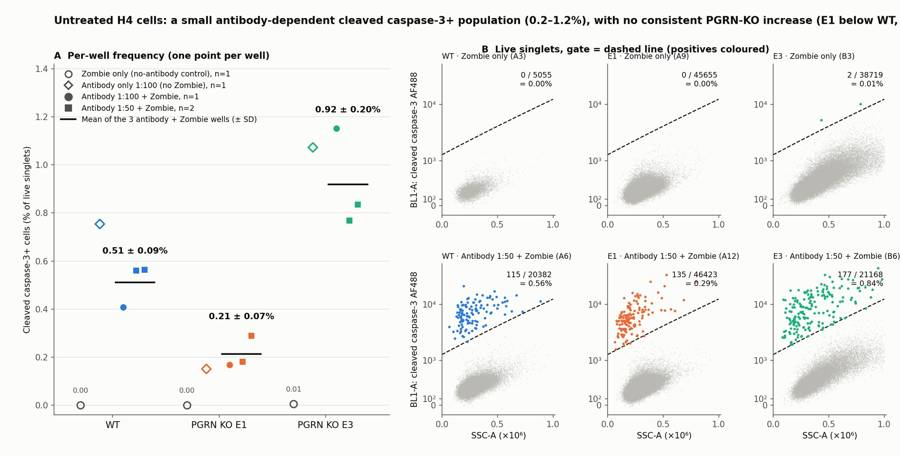
97
tool call · Bash
cd /task/work; python3 -I - <<'EOF'
s=open('final.py').read()
s=s.replace('''evd+=f" Also a start-up burst: {int(((t>2.5)&(t<3.5)).sum())} events in the 2.5-3.5 s window against a median of 389 events/s, with normal scatter and fluorescence; left in."''',
'''evd+=f" Also a start-up artefact: only {int((t<2.5).sum())} events in the first 2.5 s, then {int(((t>=3)&(t<4)).sum())} events in the 3-4 s window against a median of 389 events/s; those events have normal scatter and fluorescence, so they were left in."''')
s=s.replace(''' a2.set_title(f'{ln} · {lab} ({w})',fontsize=9,loc='left',color=INK)
a2.text(0.97,0.95,f'{len(p)} / {len(d)}\\n= {100*len(p)/len(d):.2f}%',transform=a2.transAxes,ha='right',va='top',fontsize=9)
''',''' a2.set_title(f'{ln} · {lab} ({w})\\n{len(p)} of {len(d)} positive = {100*len(p)/len(d):.2f}%',fontsize=9,loc='left',color=INK)
''')
s=s.replace("fig.text(0.535,0.885,'B Live singlets, gate = dashed line (positives coloured)',fontsize=11,fontweight='bold',ha='left')",
"fig.text(0.512,0.888,'B Live singlets; dashed line = positive gate; positive events coloured',fontsize=11,fontweight='bold',ha='left')")
s=s.replace("fig.suptitle('Untreated H4 cells: a small antibody-dependent cleaved caspase-3+ population (0.2–1.2%), with no consistent PGRN-KO increase (E1 below WT, E3 above)',x=0.06,ha='left',fontsize=12.5,fontweight='bold',y=0.965)",
"fig.suptitle('Untreated H4 cells: a small antibody-dependent cleaved caspase-3+ population (0.2–1.2% of live cells),\\nwith no consistent PGRN-KO increase (E1 below WT, E3 above)',x=0.06,ha='left',fontsize=12.5,fontweight='bold',y=0.985)")
s=s.replace("top=0.86,bottom=0.09","top=0.83,bottom=0.09").replace("hspace=0.32","hspace=0.42")
s=s.replace("fig.text(0.512,0.888,","fig.text(0.512,0.895,")
open('final.py','w').write(s)
EOF
python3 -I final.py /task/inputs/raw /task/inputs/plate_layout.csv /task/outputs | grep B598
tool call · Read
{
"file_path": "/task/outputs/figure.png"
}99
tool output
12 E3_full_stain_all B4;B5;B6 3 0.9184 0.2041 14 E3_full_stain_1to50 B5;B6 2 0.8022 0.048 B5 saturation keep_with_note 4.9% of events are off-scale in scatter (1355 events at the FSC-A maximum 1048575 and 1450 at the SSC-A maximum; row A wells have 0.1-0.5%). E3 cells are larger than WT/E1 (median FSC-A 467930 vs ~380000-400000). Off-scale events are removed by the cells gate; fluorescence channels are on scale (0 events at the BL1-A maximum). Also a start-up artefact: only 5 events in the first 2.5 s, then 683 events in the 3-4 s window against a median of 389 events/s; those events have normal scatter and fluorescence, so they were left in.
100
tool output
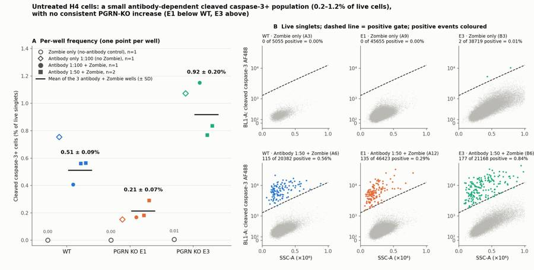
102
tool call · Bash
cd /task/work; sed -i 's/right=0.985/right=0.972/' final.py; python3 -I final.py /task/inputs/raw /task/inputs/plate_layout.csv /task/outputs >/dev/null
cat > /task/outputs/report.md <<'EOF'
# H4 cleaved caspase-3 intracellular flow, plate of 26-Oct-2022 (EXP22004082)
## Question
Does the Cell Signaling cleaved caspase-3 (Asp175) Alexa Fluor 488 antibody, used in the fix/perm intracellular protocol with Zombie NIR, detect caspase-3-positive H4 cells by flow cytometry? If so, which antibody dilution (1:100 or 1:50) works, and do the PGRN KO clones (E1, E3) show more cleaved caspase-3 than WT?
## Methods
**Data.** 18 FCS files from the Attune NxT, all acquired with the planned settings (FSC 20, SSC 290, BL1 250, RL3 350; about 98 s at 100 µL/min per well). All cells were untreated; the plate has no apoptosis-induced positive control.
**Channels.** The label on BL1-A in the files ("AAV-GFP-GFP") is left over from another experiment. From the plan, BL1-A carries the Alexa Fluor 488 cleaved caspase-3 antibody and RL3-A carries Zombie NIR.
**Compensation.** None (`uncompensated` on every gate dimension). The two dyes are on different lasers, the matrix stored in the files is the identity, and the single-stain wells show no crosstalk: antibody-only wells have the same RL3-A median as unstained wells (112–176 vs 112–181), and Zombie-only wells the same BL1-A median as unstained (234–396 vs 244–390).
**Gating.** One FlowKit GatingStrategy was applied unchanged to all 18 files and saved as `gates.xml`. Fluorescence axes use a logicle transform (T = 1048576, W = 0.5, M = 4.5, A = 0); scatter is linear.
| Population | Parent | Role | Gate |
|---|---|---|---|
| `cells` | all events | cells | Polygon on FSC-A × SSC-A. Removes debris (FSC-A < 200,000) and off-scale events (FSC-A or SSC-A ≥ 1,000,000). |
| `singlets` | `cells` | singlets | Polygon on FSC-A × FSC-H, a diagonal band with FSC-H/FSC-A of roughly 0.35–0.70. |
| `live` | `singlets` | live | Polygon on SSC-A × RL3-A: Zombie NIR below a boundary that rises with cell size (about 40,000 at SSC-A = 0 to 125,000 at SSC-A = 1,050,000). No lower bound, so wells without Zombie pass entirely. |
| `casp3_pos` | `live` | marker_positive | Polygon on SSC-A × BL1-A: above the line log10(BL1-A) = 3.1 + SSC-A/1,000,000 (about 2,000 at SSC-A 200,000; 6,300 at 700,000). |
| `dead` | `singlets` | other | Zombie NIR above the same boundary as `live`. |
| `casp3_pos_singlets` | `singlets` | other | Same caspase gate without the viability gate. |
| `casp3_pos_dead` | `dead` | other | Same caspase gate within Zombie-bright cells. |
The caspase gate is sloped because autofluorescence in BL1-A rises with SSC-A, most strongly in E3, whose cells are larger. The line sits about 2-fold above the 99.9th percentile of the unstained and Zombie-only wells at every SSC-A.
**Metric.** `casp3_pos` / `live`, in percent, per well. No normalisation or background subtraction, because the no-antibody controls are at 0.00–0.01%. Each line has three antibody + Zombie wells, each from a separate culture well (one at 1:100, two at 1:50); I report their mean ± SD.
## Results
**The antibody stains a small, discrete population.** It appears in every antibody-containing well and in none of the controls without antibody.
| Line | Unstained | Zombie only | Antibody only 1:100 | Antibody 1:100 + Zombie | Antibody 1:50 + Zombie (two wells) | Mean ± SD of the three antibody + Zombie wells |
|---|---|---|---|---|---|---|
| WT | 0.00% (0/6,305) | 0.00% (0/5,055) | 0.75% (19/2,520) | 0.41% | 0.56%, 0.56% | **0.51 ± 0.09%** |
| E1 | 0.00% (0/32,153) | 0.00% (0/45,655) | 0.15% (76/50,198) | 0.17% | 0.18%, 0.29% | **0.21 ± 0.07%** |
| E3 | 0.00% (0/22,839) | 0.01% (2/38,719) | 1.07% (332/30,953) | 1.15% | 0.77%, 0.84% | **0.92 ± 0.20%** |
- The positive events are 15–25 times brighter than the negative peak (median BL1-A 5,300–8,400 against 280–470).
- They look like early apoptotic cells: lower side scatter than the negatives (median SSC-A about 190,000–250,000 vs 280,000–295,000 in WT and E1) and intact membranes (Zombie-dim). Only 0–12 Zombie-bright events per well fall in the caspase gate.
**Line comparison.**
- **E1 vs WT:** lower, 0.21% vs 0.51% (0.42×). Well ranges do not overlap (0.17–0.29% vs 0.41–0.56%); Welch t-test on wells p = 0.012.
- **E3 vs WT:** higher, 0.92% vs 0.51% (1.8×). Well ranges do not overlap (0.77–1.15% vs 0.41–0.56%); Welch p = 0.057.
- Pooled counts give the same picture: WT 262/51,823 (0.51%), E1 313/148,301 (0.21%), E3 690/76,475 (0.90%).
- The ranking E1 < WT < E3 holds when the gate line is moved 0.2 log down (0.24%, 0.58%, 1.08%) or up (0.18%, 0.43%, 0.72%), and with a flat threshold at BL1-A 3,000.
- The two KO clones therefore move in opposite directions relative to WT. There is no consistent PGRN-KO effect.
**Antibody dilution.** Both dilutions resolve the positive population.
| | 1:100 (WT / E1 / E3) | 1:50 (WT / E1 / E3, two wells each) |
|---|---|---|
| Positive median BL1-A | 5,687 / 5,323 / 5,876 | 6,742, 7,050 / 6,185, 5,489 / 7,827, 8,365 |
| Negative median BL1-A | 290 / 280 / 426 | 313, 321 / 297, 294 / 469, 465 |
| Stain index | 23.8 / 24.2 / 9.2 | 26.9, 28.0 / 26.8, 23.4 / 11.5, 12.7 |
- Stain index is (positive median − negative median) / (2 × robust SD of the negatives).
- 1:50 gives slightly brighter positives and slightly higher background, for a marginal gain in separation at twice the antibody.
- The percentage positive does not move consistently with dilution (WT 0.41 → 0.56%, E1 0.17 → 0.24%, E3 1.15 → 0.80%). Dilution and culture well are confounded, so this is not a clean comparison.
**QC.**
- No clog or run-dry: event rates are steady over the 98 s in every well. No mislabels: Zombie and antibody signals are present exactly where the plate map says.
- **A2** (WT antibody only) has 3,149 events and 19 positive events. I kept it as a qualitative control only.
- **B1–B6** (all E3 wells) have 4.0–5.0% of events off-scale in F
… [8,877 more characters not shown]103
tool output
total 460 drwxr-xr-x 2 root root 4096 Nov 10 19:22 . drwxr-xr-x 5 root root 4096 Nov 10 19:13 .. -rw-r--r-- 1 root root 5468 Nov 10 19:22 answer.json -rw-r--r-- 1 root root 3495 Nov 10 19:22 condition_summary.csv -rw-r--r-- 1 root root 12857 Nov 10 19:19 counts.csv -rw-r--r-- 1 root root 408626 Nov 10 19:22 figure.png -rw-r--r-- 1 root root 3857 Nov 10 19:22 flags.csv -rw-r--r-- 1 root root 7869 Nov 10 19:19 gates.xml -rw-r--r-- 1 root root 9452 Nov 10 19:22 report.md
105
agent
Deliverables are all written; doing a final pass to correct a few figures in the report and re-verify that the saved gates reproduce the counts.
106
tool call · Bash
cd /task/work; python3 -I - <<'EOF'
p='/task/outputs/report.md'; s=open(p).read()
for a,b in [("(112–176 vs 112–181)","(112–174 vs 112–179)"),
("The positive events are 15–25 times brighter than the negative peak","The positive events are roughly 14–22 times brighter than the negative peak"),
("The line sits about 2-fold above","The line sits roughly 2-fold (1.7–2.7×) above"),
("the absolute percentages shift by about ±15–20% for a 0.2 log move","the absolute percentages shift by about 10–20% for a 0.2 log move")]:
assert a in s, a; s=s.replace(a,b)
open(p,'w').write(s)
p='/task/outputs/answer.json'; s=open(p).read()
a="absolute percentages move by roughly 15-20%"; assert a in s; s=s.replace(a,"absolute percentages move by roughly 10-20%"); open(p,'w').write(s)
EOF
cat > verify.py <<'EOF'
import sys, os, json, re
import pandas as pd, flowkit as fk
RAW,LAY,OUT=sys.argv[1:4]
lay=pd.read_csv(LAY)
gs=fk.parse_gating_xml(os.path.join(OUT,'gates.xml'))
c=pd.read_csv(os.path.join(OUT,'counts.csv'),keep_default_na=False)
assert list(c.columns)==['file','well','population','role','parent','count','pct_of_parent']
assert set(c.file)==set(lay.file) and len(c)==18*8
gates={g for g,_ in gs.get_gate_ids()}
assert set(c.population)-{'all_events'}==gates, (set(c.population),gates)
bad=0
for f in lay.file:
s=fk.Sample(os.path.join(RAW,f),ignore_offset_error=True)
rep=gs.gate_sample(s).report.set_index('gate_name')
sub=c[c.file==f].set_index('population')
assert sub.loc['all_events','count']==s.event_count and sub.loc['all_events','pct_of_parent']==''
for p in gates:
if int(rep.loc[p,'count'])!=int(sub.loc[p,'count']): bad+=1
par=sub.loc[p,'parent']; pc=int(sub.loc[par,'count'])
# parent in gates.xml matches
gp=rep.loc[p,'parent']; assert (gp=='root' and par=='all_events') or gp==par,(p,gp,par)
if pc: assert abs(float(sub.loc[p,'pct_of_parent'])-100*int(sub.loc[p,'count'])/pc)<1e-3
else: assert sub.loc[p,'pct_of_parent']==''
print('count mismatches:',bad)
print(c.groupby('role').population.unique())
fl=pd.read_csv(os.path.join(OUT,'flags.csv'),keep_default_na=False)
assert list(fl.columns)==['file','well','issue_type','evidence','decision'] and len(fl)==18 and set(fl.file)==set(lay.file)
assert all((fl.issue_type!='none')|(fl.decision=='keep')); assert all((fl.issue_type=='none')|fl.evidence.str.contains(r'\d'))
cs=pd.read_csv(os.path.join(OUT,'condition_summary.csv'),keep_default_na=False)
assert list(cs.columns)==['condition','wells','n_wells_used','mean','sd','metric_definition','normalisation_applied']
assert all(cs.wells.str.split(';').str.len()==cs.n_wells_used) and set(';'.join(cs.wells).split(';'))<=set(lay.well)
a=json.load(open(os.path.join(OUT,'answer.json')))
for k in a['comparisons']: assert k['a'] in set(cs.condition) and k['b'] in set(cs.condition)
assert sorted(a['excluded_wells'])==sorted(fl.well[fl.decision=='exclude'])
assert a['overall_answer'].startswith(('yes:','partial:','no:'))
print(a['assay_verdict'],a['next_action'],a['excluded_wells'])
print(re.findall(r'^## .*$',open(os.path.join(OUT,'report.md')).read(),flags=re.M))
print(fl[['well','issue_type','decision']].to_string())
EOF
python3 -I verify.py /task/inputs/raw /task/inputs/plate_layout.csv /task/outputs; head -9 /task/outputs/counts.csv; grep -c compensation-ref /task/outputs/gates.xml; grep -o 'compensation-ref="[^"]*"' /task/outputs/gates.xml | sort | uniq -c107
tool output
count mismatches: 0
role
cells [cells]
live [live]
marker_positive [casp3_pos]
other [all_events, dead, casp3_pos_singlets, casp3_p...
singlets [singlets]
Name: population, dtype: object
needs_optimisation change_treatment_or_timing []
['## Question', '## Methods', '## Results', '## Conclusion', '## Caveats', '## Recommendation']
well issue_type decision
0 A1 none keep
1 A2 too_few_events keep_with_note
2 A3 none keep
3 A4 none keep
4 A5 none keep
5 A6 none keep
6 A7 none keep
7 A8 none keep
8 A9 none keep
9 A10 none keep
10 A11 none keep
11 A12 none keep
12 B1 saturation keep_with_note
13 B2 saturation keep_with_note
14 B3 saturation keep_with_note
15 B4 saturation keep_with_note
16 B5 saturation keep_with_note
17 B6 saturation keep_with_note
file,well,population,role,parent,count,pct_of_parent
Caspase_h4_mlk(4)_caspase_Group_A1_WT_no stain.fcs,A1,all_events,other,none,6969,
Caspase_h4_mlk(4)_caspase_Group_A1_WT_no stain.fcs,A1,cells,cells,all_events,6371,91.4191
Caspase_h4_mlk(4)_caspase_Group_A1_WT_no stain.fcs,A1,singlets,singlets,cells,6305,98.9641
Caspase_h4_mlk(4)_caspase_Group_A1_WT_no stain.fcs,A1,live,live,singlets,6305,100.0
Caspase_h4_mlk(4)_caspase_Group_A1_WT_no stain.fcs,A1,casp3_pos,marker_positive,live,0,0.0
Caspase_h4_mlk(4)_caspase_Group_A1_WT_no stain.fcs,A1,dead,other,singlets,0,0.0
Caspase_h4_mlk(4)_caspase_Group_A1_WT_no stain.fcs,A1,casp3_pos_singlets,other,singlets,0,0.0
Caspase_h4_mlk(4)_caspase_Group_A1_WT_no stain.fcs,A1,casp3_pos_dead,other,dead,0,
14
14 compensation-ref="uncompensated"108
agent
The plate is analysed and all seven deliverables are in `/task/outputs/`; the saved gates reload and reproduce every count in `counts.csv`.
**Answer to the plan's question: partial.** The antibody stain works technically, but this plate cannot validate it and does not show the expected PGRN-KO increase.
- **The stain detects something real-looking.** A discrete cleaved-caspase-3-positive population appears in every antibody-containing well and is absent from the unstained and Zombie-only controls (0.00–0.01%).
- **Baseline is very low.** Cleaved-caspase-3-positive cells as a percentage of live single cells, three wells per line:
| Line | Mean ± SD | Pooled counts |
|---|---|---|
| WT | 0.51 ± 0.09% | 262 / 51,823 |
| E1 | 0.21 ± 0.07% | 313 / 148,301 |
| E3 | 0.92 ± 0.20% | 690 / 76,475 |
- **The two KO clones disagree.** E1 is below WT and E3 is above, so there is no consistent PGRN-KO effect. The ranking holds when the gate is moved 0.2 log either way.
- **1:100 is sufficient.** 1:50 gives slightly brighter positives and slightly higher background, a marginal gain for twice the antibody.
- **E3 is physically different.** Its cells are larger and more autofluorescent, so its higher percentage may be a clone feature and not PGRN-related.
**QC:** no wells excluded. A2 (WT antibody only) has only 3,149 events and 19 positive events, so I kept it as a qualitative control only. All six E3 wells have 4–5% of events off-scale in scatter; those events are removed by the scatter gate and the wells are kept with a note. The BL1 label in the files ("AAV-GFP") is stale; that detector carries the caspase antibody.
**Recommendation:** `change_treatment_or_timing`, with the assay rated `needs_optimisation`. Add camptothecin-treated wells for each line as an induced positive control, and collect the medium and wash so detached apoptotic cells are not discarded. The 5 µM for 16–24 h starting point is my suggestion, not something from the plan, and may need adjusting for H4.
Two caveats matter most: the plate has no positive or isotype control, and the three wells per line come from one plating, so the line differences are well-to-well consistency only.
Files are in `/task/outputs/`:
- gates.xml
- counts.csv
- flags.csv
- condition_summary.csv
- figure.png
- report.md
- answer.json
final result
The plate is analysed and all seven deliverables are in `/task/outputs/`; the saved gates reload and reproduce every count in `counts.csv`.
**Answer to the plan's question: partial.** The antibody stain works technically, but this plate cannot validate it and does not show the expected PGRN-KO increase.
- **The stain detects something real-looking.** A discrete cleaved-caspase-3-positive population appears in every antibody-containing well and is absent from the unstained and Zombie-only controls (0.00–0.01%).
- **Baseline is very low.** Cleaved-caspase-3-positive cells as a percentage of live single cells, three wells per line:
| Line | Mean ± SD | Pooled counts |
|---|---|---|
| WT | 0.51 ± 0.09% | 262 / 51,823 |
| E1 | 0.21 ± 0.07% | 313 / 148,301 |
| E3 | 0.92 ± 0.20% | 690 / 76,475 |
- **The two KO clones disagree.** E1 is below WT and E3 is above, so there is no consistent PGRN-KO effect. The ranking holds when the gate is moved 0.2 log either way.
- **1:100 is sufficient.** 1:50 gives slightly brighter positives and slightly higher background, a marginal gain for twice the antibody.
- **E3 is physically different.** Its cells are larger and more autofluorescent, so its higher percentage may be a clone feature and not PGRN-related.
**QC:** no wells excluded. A2 (WT antibody only) has only 3,149 events and 19 positive events, so I kept it as a qualitative control only. All six E3 wells have 4–5% of events off-scale in scatter; those events are removed by the scatter gate and the wells are kept with a note. The BL1 label in the files ("AAV-GFP") is stale; that detector carries the caspase antibody.
**Recommendation:** `change_treatment_or_timing`, with the assay rated `needs_optimisation`. Add camptothecin-treated wells for each line as an induced positive control, and collect the medium and wash so detached apoptotic cells are not discarded. The 5 µM for 16–24 h starting point is my suggestion, not something from the plan, and may need adjusting for H4.
Two caveats matter most: the plate has no positive or isotype control, and the three wells per line come from one plating, so the line differences are well-to-well consistency only.
Files are in `/task/outputs/`:
- gates.xml
- counts.csv
- flags.csv
- condition_summary.csv
- figure.png
- report.md
- answer.json